Elektronische Eigenschaften
von Cd Hg Te mit 0.07<x<0.4
X
1-X
Diplomarbeit
HUMBOLDT-UNIVERSITÄT ZU BERLIN
INSTITUT FÜR PHYSIK
AG ELEKTRONISCHE EIGENSCHAFTEN UND SUPRALEITUNG
eingereicht von
Matthias Kreier
geb. am 3.10.1975 in Nauen
Berlin, 24. 1. 2008
Inhaltsverzeichnis
1
Einleitung
1
2
Eigenschaften von II-VI Halbleitern
3
2.1
Kristallstruktur . . . . . . . . . . . . . . . . . . . . . . . . . . . . . . . . . . . . . .
3
2.2
Volumen-Brillouin-Zone . . . . . . . . . . . . . . . . . . . . . . . . . . . . . . . . .
4
2.3
Oberflächeneigenschaften . . . . . . . . . . . . . . . . . . . . . . . . . . . . . . . .
6
3
Theoretische Grundlagen der Photoemission
7
3.1
Messprinzip der Photoelektronspektroskopie . . . . . . . . . . . . . . . . . . . . .
7
3.2
Das Drei-Stufen-Modell . . . . . . . . . . . . . . . . . . . . . . . . . . . . . . . . .
8
3.3
Auswertung der Messdaten und Spektren . . . . . . . . . . . . . . . . . . . . . . .
13
3.3.1
Konstanter Untergrund . . . . . . . . . . . . . . . . . . . . . . . . . . . . .
13
3.3.2
Subtraktion des inelastischen Untergrundes . . . . . . . . . . . . . . . . .
14
3.3.3
Glättung der Spektren nach Savitzky-Golay . . . . . . . . . . . . . . . . .
15
3.4
Trennung von Oberflächen und Volumenbandstruktur . . . . . . . . . . . . . . .
15
4
Experimentelles
17
4.1
Die Photoemissionsanlage AR65 . . . . . . . . . . . . . . . . . . . . . . . . . . . .
17
4.2
Heliumlampe Focus HIS 13 . . . . . . . . . . . . . . . . . . . . . . . . . . . . . . .
19
4.3
Automatische Stickstoff-Nachfüllanlage . . . . . . . . . . . . . . . . . . . . . . . .
20
4.4
BUS-Beamline bei BESSY . . . . . . . . . . . . . . . . . . . . . . . . . . . . . . . . .
22
4.5
Röntgenuntersuchung mittels Laue . . . . . . . . . . . . . . . . . . . . . . . . . . .
23
5
Das Material HgCdTe und Charakterisierung der Proben
25
5.1
Eigenschaften . . . . . . . . . . . . . . . . . . . . . . . . . . . . . . . . . . . . . . .
25
5.2
Herstellungsverfahren . . . . . . . . . . . . . . . . . . . . . . . . . . . . . . . . . .
27
5.3
Übersicht der untersuchten Proben . . . . . . . . . . . . . . . . . . . . . . . . . . .
29
5.4
Laue-Aufnahmen zur Kristallqualität . . . . . . . . . . . . . . . . . . . . . . . . .
30
5.5
Bestimmung der Zusammensetzung mittels energiedispersiver Röntgenspektro-
skopie . . . . . . . . . . . . . . . . . . . . . . . . . . . . . . . . . . . . . . . . . . . .
32
5.6
Überprüfung der Kristalle mit dem Atomkraftmikroskop . . . . . . . . . . . . . .
32
6
Präparation der (110) Oberfläche
34
6.1
Sputtern und Annealen . . . . . . . . . . . . . . . . . . . . . . . . . . . . . . . . . .
34
6.2
Spalten der Proben im Vakuum . . . . . . . . . . . . . . . . . . . . . . . . . . . . .
36
6.2.1
Konstruktion einer Spaltkammer . . . . . . . . . . . . . . . . . . . . . . . .
36
6.2.2
Spaltmechanismus im Probenhalter . . . . . . . . . . . . . . . . . . . . . .
37
6.3
Aufnahmen der Spaltungen mit dem Rasterelektronenmikroskop . . . . . . . . .
38
6.4
Prüfung der Oberflächenqualität durch die Beugung langsamer Elektronen . . .
39
I
II
INHALTSVERZEICHNIS
7
Ergebnisse der Photoemission
41
7.1
Energie der gemessenen Zustände . . . . . . . . . . . . . . . . . . . . . . . . . . .
41
7.2
Allgemeine Charakteristika . . . . . . . . . . . . . . . . . . . . . . . . . . . . . . .
44
7.3
Energie der Kernniveaus . . . . . . . . . . . . . . . . . . . . . . . . . . . . . . . . .
46
7.3.1
Tellur 4d . . . . . . . . . . . . . . . . . . . . . . . . . . . . . . . . . . . . . .
46
7.3.2
Quecksilber 5d und Cadmium 4d . . . . . . . . . . . . . . . . . . . . . . .
46
7.4
Das Valenzband - Messung in normaler Emission . . . . . . . . . . . . . . . . . .
48
7.5
Winkelaufgelöste Photoemissionsmessungen . . . . . . . . . . . . . . . . . . . . .
52
7.6
Bandstruktur und Theorie . . . . . . . . . . . . . . . . . . . . . . . . . . . . . . . .
53
8
Zusammenfassung
56
A Anhang
57
A.1 Messdaten EDX April 2007 . . . . . . . . . . . . . . . . . . . . . . . . . . . . . . . .
57
A.2 Messdaten EDX August 2007 . . . . . . . . . . . . . . . . . . . . . . . . . . . . . .
58
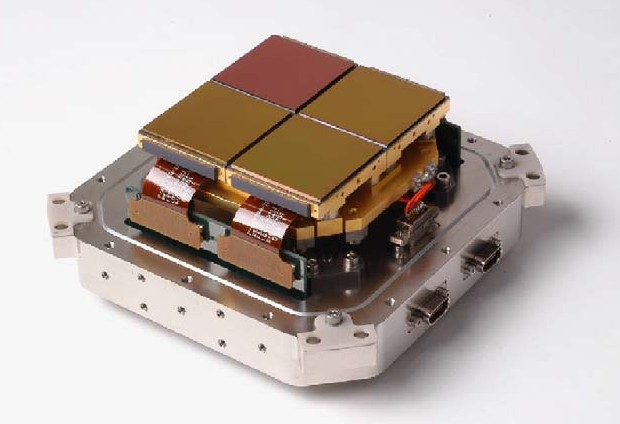
Kapitel 1
Einleitung
Aufgrund militärischer Anforderungen war man in den 40er und 50er Jahren des 20. Jahrhun-
derts intensiv auf der Suche nach einem direkten intrinsischen Halbleiter für den langwelligen
Infrarot-Wellenlängenbereich (LWIR, 8-14 µm). Ein Ergebnis dieser Bemühungen war die Syn-
these der ternären Legierung HgCdTe im Jahre 1958 von der Lawson Forschungsgruppe [1]
am Royal Radar Establishment in England. Die Bedeutung dieser Arbeit wurde schon früh
erkannt. Das führte zu einer intensiven Entwicklung in zahlreichen Ländern wie England,
Frankreich, Polen, Deutschland, der Sowjetunion sowie den USA [2]. Doch wurde über die
Entwicklung in den ersten Jahren wenig veröffentlicht. Die Arbeiten in den USA zum Beispiel
unterlagen der Geheimhaltung bis in die späten 60er Jahre. Die ersten Photodetektoren wurden
in den USA bereits 1964 von Texas Instruments hergestellt.
Abbildung 1.1: HgCdTe in Infrarotkameras: Das Rock-
well 2x2 2Kx2K Infrarot-Array Hawaii-2RG [3].
Verschiedene Eigenschaften machen HgCdTe zum idealen Material als IR Detektor. Eini-
ge von diesen sind eine einstellbare Bandlücke von 0,7 to 25 µm, die direkte Bandlücke mit
hohem Absorptionskoeffizienten, moderate Dielektrizitätskonstante und Brechungsindex so-
wie einen geringen thermischen Ausdehnungskoeffizienten. Weiterhin gibt es eine Auswahl
passender Substrate für epitaktisches Wachstum über einen großen Wellenlängenbereich (z. B.
Cd0.96Zn0.04Te).
Aufgrund seiner Eigenschaften ist HgCdTe im Bereich der IR-Detektoren das Material der
Wahl [3], [4]. In Abbildung 1.1 ist das 2x2 2Kx2K Infrarotarray Hawaii-2RG (16 Megapixel)
zu sehen. Es wurde für das 6,5 m James Webb Space Telescope (JWST), den Nachfolger des
Hubble-Teleskopes, entwickelt. Es wird unter anderem im Very Large Telescope (VLT) der ESO
1
2
Einleitung
im Experiment SINFONI verwendet [5]. Das Material wird schon seit langem bei Weltraummis-
sionen für die Infrarotastronomie eingesetzt. Zu erwähnen wäre hier das Experiment NICMOS
(Near Infrared Camera and Multi-Object Spectrometer), welches aus Kameras und Spektrome-
tern für das nahe Infrarot bis 2,5 µm Wellenlänge am Hubble-Weltraumteleskop besteht und
seit 1997 im Einsatz ist.
Seine besonderen Eigenschaften erhält die ternäre Verbindung HgCdTe durch eine Mi-
schung der Eigenschaften seiner beiden Bestandteile CdTe und HgTe. Beide Materialien lassen
sich in beliebigen Verhältnissen mischen. Das Verhältnis von Cd zu Hg wird mit 0 < x < 1 in
Hg1-XCdXTe angegeben. Bei CdTe handelt es sich um einen klassischen Halbleiter mit einer di-
rekten Bandlücke von 1,6 eV. Die Legierung HgTe hingegen ist nicht einfach einzuordnen. Sie
besitzt metallische Eigenschaften, weshalb einige sie als Semimetall bezeichnen. Andererseits
zeigt sie Halbleitereigenschaften, die allerdings nur richtig erklärt werden können, wenn man
von einer negativen Bandlücke ausgeht. Gemäß der Definition der Bandlücke als Energiediffe-
renz zwischen Γ8 und Γ6 beträgt die Bandlücke daher -0.283 eV. Dies ist in Übereinstimmung
mit magnetooptischen Transportmessungen [6].
Ziel dieser Diplomarbeit ist die Untersuchung der elektronischen Struktur von CdxHg1-xTe
mit x-Werten von 0,07 bis 0,4. Uns interessiert, wie sich die elektronische Bandstruktur beim
Übergang vom Halbleiter zum ’zero-gap’-Halbleiter zum Halbleiter mit negativer Bandlücke
verhält. Als verheißungsvoll erwies sich die Arbeit von N. Orlowski [7] an HgTe, in der das
unter das VBM geklappte Γ6-Band spektroskopisch aufgelöst werden konnte. Seine Ergebnisse
von 2000 motivierte zweifellos zur Ausschreibung der folgenden Diplomarbeit im Jahre 2004:
Elektronische Eigenschaften der II-VI-Halbleiterverbindungen Cd1-xHgxTe und Pb1-xSnxTe
Die in der Arbeit zu untersuchenden ternären Halbleiterverbindungen erlauben in Abhängigkeit
von der Zusammensetzung eine weite Variation der fundamentalen Bandlücke, die nicht nur zu
Null sondern sogar auch negativ gemacht werden kann (wird bei Nachfrage näher erläutert).
Dabei wird das prinzipielle Auftreten einer negativen Bandlücke bei verschiedenen Halbleitern
heute noch kontrovers diskutiert und eine direkte Untersuchungsmethode wie die winkelaufge-
löste Photoemission könnte hier die Klärung bringen.
Die Aufgabe der/des Diplomandin/en besteht u.a. darin, die in einem kooperierenden Mos-
kauer Institut hergestellten Einkristalle zu charakterisieren (z.B. SEM/Röntgenemission, Laue-
Beugung, LEED) und anschließend mit winkelaufgelöster Photoemission und evtl. auch inverser
Photoemission die experimentelle Bandstruktur zu bestimmen und die Ergebnisse mit Rechnun-
gen verschiedener Modelle zu vergleichen und zu diskutieren. Die Messungen sollen sowohl im
Berliner Institut als auch teilweise mit Synchrotronstrahlung (BESSY in Berlin oder HASYLAB in
Hamburg) durchgeführt werden.
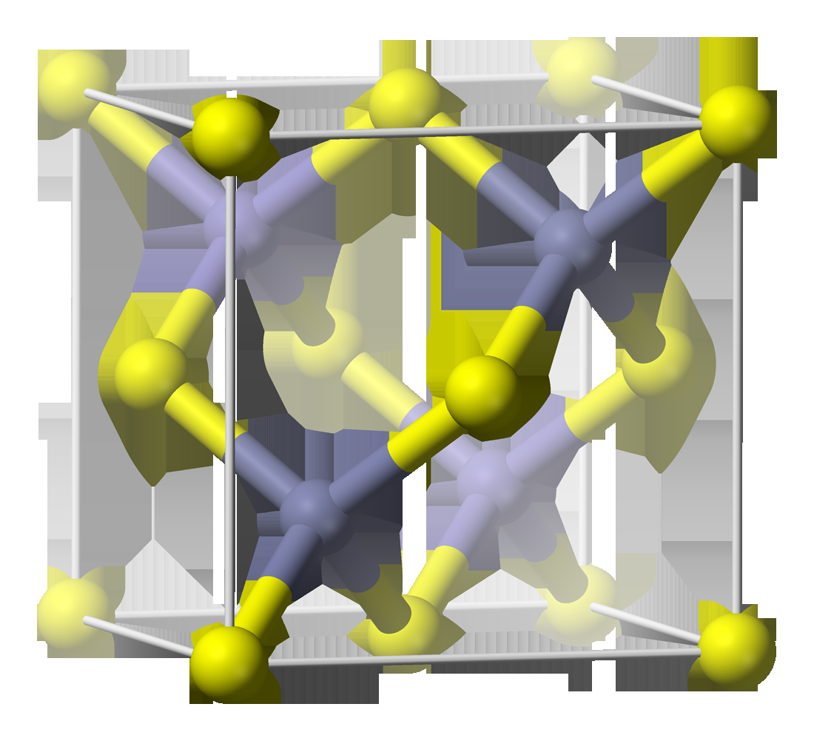
Kapitel 2
Eigenschaften von II-VI Halbleitern
2.1
Kristallstruktur
Die Struktur von kristallinen Festkörpern wird durch das Gitter und die Basis beschrieben.
Das Gitter ist eine dreidimensionale Anordnung von Punkten, deren kleinste Einheit die Ele-
mentarzelle ist. Es wird durch die entsprechenden Gitterkonstanten sowie primitive Vektoren
beschrieben. Die Basis definiert die Anordnung der Atome in der Elementarzelle. Zu jeder
Struktur gibt es ein entsprechendes reziprokes Gitter im reziproken Raum. In diesem wird die
elektronische Struktur beschrieben. Die Wigner-Seitz-Zelle des reziproken Gitters heißt erste
Brillouin-Zone.
Abbildung 2.1: Zinkblendestruktur von HgCdTe. Die gelben Punkte re-
präsentieren das Tellur. An den grauen Plätzen befindet sich Cadmium
mit einem Anteil von „x“ oder Quecksilber mit einem Anteil „1-x“.
Die räumliche Struktur von HgCdTe wird als „Zinkblende-Struktur“ bezeichnet (Abbil-
dung 2.1). Diese Struktur wird durch zwei kubisch-flächenzentrierte (fcc) Elementarzellen ge-
bildet, die um ein Viertel ihrer Raumdiagonalen gegeneinander verschoben sind. Hier bildet
ein Tellur-Atom die Basis des ersten Gitters. Die Basis des zweiten Gitters wird zu x aus Cad-
miumatomen gebildet und zu 1 − x aus Atomen von Quecksilber.
3
4
Eigenschaften von II-VI Halbleitern
Tabelle 2.1: Entfernungen der hochsymmetrischen Punkte vom Zentrum der Volumen-Brillouin-Zone
des fcc-Gitters. Die formalen Werte für df sind angegeben, um aus einer beliebigen Gitterkonstante a
die Entfernungen berechnen zu können.
df
d(HgTe)
d(Hg0.8Cd0.2Te)
d(CdTe)
d
π/a
Å−1
Å−1
Å−1
√
|ΓΛL|
3
0.844
0.843
0.839
|Γ∆X|
2
0.974
0.973
0.968
√
|ΓΣK|
3/ 2
1.034
1.033
1.027
√
|ΓW|
5
1.090
1.088
1.083
√
|ΓU|
3/ 2
1.034
1.033
1.027
√
|ΓK X |
2 2
1.379
1.377
1.370
In dieser Kristallstruktur ist jedes Atom tetraedrisch von vier nächsten Nachbarn der ande-
ren Atomsorte umgeben. Die Ursache ist die Hybridisierung der s- und p-Orbitale der Valenz-
elektronen zu sp3-Hybridorbitalen. Sie schließen einen Bindungswinkel von 109,5◦ ein.
Die Gitterkonstanten von HgTe und CdTe unterscheiden sich um weniger als 0.7% vonein-
ander. Für die ternären Verbindung Hg1-xCdxTe folgt sie entsprechend dem Kompositionspa-
rameter x der empirischen Formel a = 6, 4614 + 0, 00084x + 0, 0168x2 − 0, 0057x3 [8] .
Substanz
a/Å
HgTe
6,445 [9]
Hg0.8Cd0.2Te
6,464 [10]
CdTe
6,488 [9]
Das Kristallgitter wird durch folgende primitive Vektoren beschrieben:
a
a
a
~a1 =
(1, 1, 0) ,
~a2 =
(0, 1, 1) ,
~a3 =
(1, 0, 1).
(2.1)
2
2
2
Gemäß Definition ergeben sich daraus die zugehörigen reziproken Gittervektoren:
~
2π
2π
2π
b1 =
(1, 1, −1) ,
~
b2 =
(−1, 1, 1) ,
~
b3 =
(1, −1, 1).
(2.2)
a
a
a
2.2
Volumen-Brillouin-Zone
Aus diesen reziproken Gittervektoren resultiert ein reziprokes Gitter, das kubisch raumzen-
triert (bcc, body centered cubic) ist. Die erste Brillouin-Zone ist das in Abbildung 2.2 darge-
stellte abgestumpfte Oktaeder. Die Abbildung zeigt einen Schnitt durch die Volumen-Brillouin-
Zone sowie die Oberflächen-Brillouin-Zonen, die den Flächen (110) und (001) entspechen.
Ebenfalls eingezeichnet sind die hochsymmetrischen Punkte Γ, X, L, K, W und U. Es finden
sich auch die drei hochsymmetrischen Richtungen ∆, Σ und Λ. Sie entsprechen den Richtungen
[001],[110] und [111]. Die jeweiligen Abstände können in Tabelle 2.1 abgelesen werden.

Volumen-Brillouin-Zone
5
Abbildung 2.2: Volumen-Brillouin-Zone des fcc-Gitters sowie Oberflächen-Brillouin-
Zonen der idealen (001) und (110) Oberflächen. Einige hochsymmetrische Punkte
sind eingezeichnet. Die Richtungen ∆, Σ und Λ entsprechen jeweils der Richtung
[001], [110] und [111].

6
Eigenschaften von II-VI Halbleitern
2.3
Oberflächeneigenschaften
An der Oberfläche kommt es zu einem Bruch der Translationssymmetrie des Volumenkristalls.
Man kann daher die Oberfläche als eine Störung auffassen; das Kristall nimmt einen Zustand
minimaler Energie an. In der idealen Oberfläche besetzen die Oberflächenatome eine wohldefi-
nierte Gitterebene des Volumenkristalls, ihre Periodizität wäre somit festgelegt. Dieser Zustand
ist jedoch äußerst selten der Fall.
Die einfachste Abweichung von der idealen Oberfläche wird als Relaxation bezeichnet. Hier-
bei treten einheitliche Verschiebung der obersten oder der oberen Lagen gegenüber dem Volu-
men auf. Von einer Rekonstruktion spricht man, wenn die Atome der obersten Lage periodisch
gegeneinander verschoben sind und eine Überstruktur bilden [11].
Die natürliche Spaltfläche der II-VI-Halbleiter (wie auch HgCdTe) ist die (110)-Fläche. Durch
ein Spalten der Probe im Vakuum lässt sich diese Oberfläche am einfachsten generieren. Alle
Messungen dieser Arbeit wurden daher an dieser Oberfläche durchgeführt. Andere Oberflä-
chen sind weitaus schwieriger herzustellen, wie zum Beispiel die (001)-Oberfläche [7].
Abbildung 2.3: Geometrie der (110)-Oberfläche der Zinkblende-Struktur [12] im Querschnitt und in
√
der Draufsicht. Die Parameter der Oberfläche sind ax = a/ 2 und ay = a.
Die (110)-Oberfläche enthält ebenso viele Anionen wie Kationen und ist daher energetisch
begünstigt. Es handelt sich um eine unpolare Oberfläche. Bei der Spaltung relaxiert die (110)-
Oberfläche. Die Anionen entfernen sich von der Oberfläche, während sich die Kationen auf das
Kristall zu bewegen. Für diese Oberfläche wurde ein universales Modell entwickelt, das unab-
hängig von der Substanz gültig ist [13]. Hierbei bleiben die Bindungslängen nahezu erhalten,
die Symmetrie parallel zur Oberfläche wird nicht geändert.
An der Oberfläche wird die Anion-Kation-Bindung aufgebrochen. Bei der Relaxation kommt
es zu einem Ladungstransfer vom Kation-’dangling bond’ zum Anion-’dangling-bond’. Das
’dangling-bond’ am Kation wird vollständig geleert und am Anion entsprechend vollständig
besetzt. Jedes Oberflächenatom besitzt nur noch drei der ursprünglich vier Nachbarn. So hat
jedes Anion (Kation) der Oberfläche zwei Bindungen zu einem Oberflächen-Kation (Anion), ei-
ne zu einem Kation (Anion) im Volumen gerichtete Bindung sowie eine ins Vakuum gerichtete
freie Valenz (’dangling bond’). Es kommt daher zu einer Dehybridisierung der sp3-Orbitale.
Die Anionen nehmen eine s2p3 Koordination an, die Kationen erhalten eine planare sp2 Koor-
dination. Das vom Anion-’dangling-bond’-abgeleitete Band senkt sich energetisch ab. Es ver-
schiebt sich zum oberen Rand des Volumen-Valenzbandes.
Kapitel 3
Theoretische Grundlagen der
Photoemission
Um geeignete Materialien in Bauelementen wie Solarzellen, Detektoren oder integrierten Schalt-
kreisen verwenden zu können, muss ihre elektronische und strukturelle Charakteristik bekannt
sein. Dazu gehören ebenfalls die Transporteigenschaften des Materials. Die Bestimmung der
elektronischen Bandstruktur ist hierzu eines der wichtigsten Hilfsmittel.
Eine leistungsfähige Methode, die direkte Zustandsdichte und die impulsaufgelöste Ener-
giebandstruktur zu bestimmen, ist die Photoelektronspektroskopie. Im Rahmen dieser Diplom-
arbeit findet insbesondere die winkelaufgelöste Photoelektronspektroskopie oder ARPES1 An-
wendung. Im Folgenden werden ihre physikalischen Grundlagen erläutert.
3.1
Messprinzip der Photoelektronspektroskopie
Die Photoelektronspektroskopie basiert auf dem so genannten äußeren Photoeffekt. Dieses
physikalische Phänomen wurde bereits 1887 von H. Hertz [14] und 1888 von W. Hallwachs
[15] entdeckt und untersucht. Die richtige Deutung erfolgte durch A. Einstein im Jahre 1905
([16], Nobelpreis 1921). Der Effekt wird durch die folgende Formel beschrieben:
Emax
kin
= hν − Φ.
(3.1)
Sie gibt die maximale kinetische Energie Emax an, mit der Elektronen bei Anregung mit
kin
Strahlung der Energie hν aus einem Metall austreten. Hier ist h das Plancksche Wirkungs-
quantum, ν die Frequenz des ionisierenden Photons und Φ die Austrittsarbeit des angeregten
Materials.
Abhängig von der Energie der anregenden Photonen spricht man in der Photoelektronen-
spektroskopie von UPS2 oder XPS3, wobei UPS Photonenenergien im UV-Bereich (10 bis 100
eV) bezeichnet und XPS Photonen im Röntgenbereich (> 1000 eV). Auf Grund ihrer höhe-
ren Energie werden durch XPS auch Rumpfelektronen angeregt. In Abhängigkeit der chemi-
schen Umgebung zeigen XPS-Spektren Unterschiede in den Bindungsenergien eines Rumpf-
1ARPES - Angle Resoved Photo Electron Spectroscopy
2UPS - Ultraviolet Photoemission Spectroscopy, UV-Photoemission
3XPS - X-Ray Photoemission Spectroscopy, Röntgenphotoemission
7

8
Theoretische Grundlagen der Photoemission
Abbildung 3.1: Messprinzip der winkelaufgelösten Photoemission. Als Photonen-
quelle kann ein Synchrotron dienen. Als Energieanalysator ist der Schnitt durch
einen aktuellen Scienta dargestellt.
elektrons. In vielen Fällen kann aus der Form der Spektren Aufschluss über den Valenzzustand
eines Elementes gegeben werden. Diese chemische Analyse ist unter der Bezeichnung ECSA
(Electron Spectroscopy for Chemical Analysis) bekannt.
Demgegenüber werden in UPS nur Valenzelektronen und Elektronen aus hochgelegten
Rumpfniveaus angeregt. UPS eignet sich daher zur Untersuchung der Valenzbandstruktur von
Halbleitern. In ARPES werden die emittierten Elektronen winkel- und energieaufgelöst detek-
tiert. Das Prinzip wird in Abbildung 3.1 verdeutlicht.
3.2
Das Drei-Stufen-Modell
Es gibt eine Vielzahl erfolgreicher theoretischer Beschreibungen des Photoemissionsprozesses.
In der Praxis hat sich das anschauliche Drei-Stufen-Modell [17] durchgesetzt. Im Einteilchen-
bild gliedert sich der Prozess damit in die folgenden drei unabhängigen Schritte [18]:
• Absorption des Photons und Anregung eines Elektrons aus einem Anfangszustand im
Valenzband in einen Endzustand im Leitungsband
• Transport des angeregten Elektrons zur Oberfläche des Festkörpers
• Austritt des Elektrons durch die Oberfläche ins Vakuum
Die einzelnen Schritte dieses Modells werden im Folgenden einzeln beschrieben.
Schritt 1: Anregung des Elektrons
Der erste Schritt beschreibt die Photoionisation. Lokal wird ein Photon absorbiert und ein Elek-
tron angeregt. Dieser Prozess lässt sich mit der zeitabhängigen Störungstheorie erklären [19].
Das Drei-Stufen-Modell
9
Die Übergangsrate Tf→i für ein Elektron von einem Anfangszustand |Φii mit einer Anfangs-
energie Ei in einen Endzustand |Φf i mit der Energie Ef ist durch Fermis Goldene Regel gege-
ben:
2π
Tf→i =
|hΦf |HW W |Φii|2δ(Ef − Ei − ~ω)
(3.2)
~
Hierbei bezeichnet ~ω die Energie des Photons. Die Wechselwirkung zwischen Elektron
und Photon wird durch den Hamiltonoperator HW W beschrieben. In Coulomb-Eichung und
linearer Näherung lautet dieser
e
H
~
W W =
A · ~
p .
(3.3)
2mc
Das Vektorpotential der einfallenden elektromagnetischen Strahlung ist durch ~
A gegeben
und beinhaltet Eigenschaften wie Frequenz, Phase und Polarisation. ~
p ist der quantenmecha-
nische Impulsoperator ~
p = −i~∇. Die Energieerhaltung fordert, dass nur Übergänge vorkom-
men, die der Relation Ef = Ei + ~ω genügen. Diese Bedingung wird in Formel 3.2 durch die
δ-Funktion berücksichtigt.
Es seien die Wellenvektoren des Anfangs- und Endzustandes mit ~ki und ~kf gegeben. Der
Photonenimpuls kann bei den geringen Anregungsenergien von ARPES gegenüber dem Elek-
tronenimpuls vernachlässigt werden. Wir erhalten daher wellenvektorerhaltende direkte Über-
gänge. Die Impulserhaltung lautet somit:
~
ki = ~
kf = ~k
(3.4)
Die Übergangswahrscheinlichkeit wird im wesentlichen durch das Betragsquadrat des Über-
gangsmatrixelementes in Gleichung 3.2 bestimmt. Dieses hängt sowohl vom Anfangszustand
|Φii als auch vom Endzustand |Φf i ab. In der Photoemission wird daher eine Kombination aus
beiden Zustandsdichten gemessen.
Schritt 2: Transport des angeregten Elektrons zur Oberfläche
Die Photonen dringen mehrere 100 Å in den Festkörper ein und regen Elektronen an. Beim
Transport zur Oberfläche verlieren einige Elektronen durch inelastische Stöße kinetische Ener-
gie. Dabei geht die Information über den Anfangszustand verloren. Die mittlere freie Weglänge
der Elektronen in Abhängigkeit von ihrer kinetischen Energie ist in Abbildung 3.3 gezeigt. Die-
se „universelle Kurve“ ergibt sich aus Messungen, die an verschiedenen Materialien durchge-
führt wurden. Die eingetragenen Messpunkte verdeutlichen, dass die mittlere freie Weglänge
weitgehend unabhängig vom Material ist.
Aus der Abbildung ist ersichtlich, dass die mittlere freie Weglänge bei den in UPS übli-
chen Anregungsenergien nur einige Angström beträgt. Damit ist der Transport zur Oberfläche
der limitierende Schritt der PES und begründet seine Oberflächensensitivität. Messungen der
Photoemission repräsentieren nur die obersten Atomschichten. Sie erfordern ein gutes Vaku-
um, um eine Bedeckung der Oberfläche mit Fremdatomen zu verhindern. Weiterhin werden
besondere Anforderungen gestellt, um zuvor eine geeignete Oberfläche zu erhalten.

10
Theoretische Grundlagen der Photoemission
Abbildung 3.2: Photoemissionsprozess und zugehörige Energieverhältnisse für Probe und Analysator.
Die einzelnen Energien werden im Text erläutert.
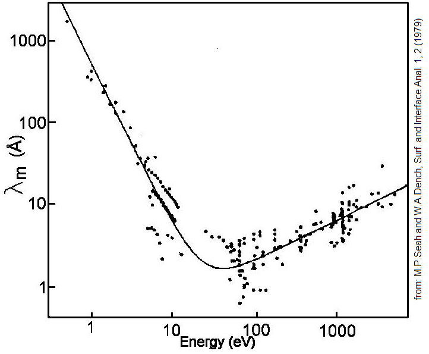

Das Drei-Stufen-Modell
11
Abbildung 3.4: Brechung der Elektro-
nen an der Kristalloberfläche. ~
K Wellen-
Abbildung 3.3: Energieabhängige mittlere freie Weglänge
vektor im Vakuum, ~kf Wellenvektor des
von Elektronen im Festkörper [20].
Endzustandes im Kristall
Der dominierende Stoßprozess ist die Elektron-Elektron Streuung. Durch diesen Prozess
wird ein Spektrum von niederenergetischen Sekundärelektronen generiert, die später im Pho-
toemissionsspektrum sichtbar sind (siehe Abbildung 3.2). Die Elektron-Phonon Wechselwir-
kung hat nur bei sehr geringen Energien eine Bedeutung [18].
Schritt 3: Durchtritt des Elektrons vom Festkörper ins Vakuum
Der dritte Schritt ist mit einer Brechung verbunden. Wir können das angeregte Elektron inner-
halb des Kristalls als quasi-frei betrachten. Die Energie-Impuls-Beziehung für den Endzustand
~
kf vor dem Durchtritt durch die Oberfläche lautet daher
2
~
E
~
f =
k2
2m
f
.
(3.5)
e
Der Wellenvektor ~kf zerlegt sich in seine Anteile ~kfk parallel zur Probenoberfläche und ~kf⊥
senkrecht zur Oberfläche (siehe Abbildung 3.4). Aufgrund der Translationsinvarianz bleibt die
parallele Komponente beim Durchtritt bis auf einen reziproken Gittervektor oder Oberflächen-
gittervektor ~gk erhalten:
~
Kk = ~kfk + ~gk
Die Addition eines solchen reziproken Gittervektors bezeichnet man als Umklappprozess.
Betrachten wir die Emission unter einem Winkel ϑ zur Probennormalen und vernachlässigen
Umklappprozesse (d. h. ~gk = 0), so erhalten wir für die Parallelkomponente des Wellenvektors:
r
~
2m
kf = ~
K
E
k
k =
kin sin ϑ
(3.6)
~

12
Theoretische Grundlagen der Photoemission
Die senkrechte Komponente bleibt nicht erhalten, da das Kristallpotential V0 außerhalb des
Festkörpers nicht vorhanden ist. Dies führt zu einer Verkürzung der senkrechten Komponente.
Dennoch können wir über sie eine Aussage machen, wenn wir als Endzustände freie Elektro-
nenparabeln annehmen. Die kinetische Energie ist dann wie folgt gegeben:
2
~
Ekin =
(~
kf + ~
G)2 − |V0|
(3.7)
2m
Die reziproken Volumengittervektoren ~
G repräsentieren die jeweiligen Elektronenparabeln.
Der Wellenvektor ~kf lässt sich in seine Komponenten ~kf = ~kfk + ~kf⊥ zerlegen. Das Ergebnis
von Gleichung (3.6) kann in diesen Ansatz eingesetzt werden. In senkrechter Emission (ϑ = 0)
erhalten wir:
r 2m
kf =
(E
− G
⊥
2
kin + |V0|) − ~
G2k
⊥
(3.8)
~
Hier wurde der Volumengittervektor ~
G in seine Komponenten zerlegt. Jedoch kann ~
Gk auch
ein reziproker Oberflächengittervektor sein. Aufgrund der Impulserhaltung (3.4) kann so aus
(3.6) und (3.8) die gemessene Zustandsdichte einem bestimmten Punkt in der Brillouin-Zone
zugeordnet werden. Durch ein systematisches Abrastern des k-Raumes kann auf diese Weise
die Bandstruktur E(~k⊥, ~kk) = E(~k) bestimmt werden. In der Praxis erfolgt dies entlang hoch-
symmetrischer Richtungen.
Ei
Energie des Anfangszustandes
Ef
Energie des Endzustandes
EV BM Valenzbandmaximum
Evac,S Vakuumenergie der Probe
Evac,A Vakuumenergie des Analysators
~ω
Energie des Photons
Ub
Bindungsenergie
Ethr
Photoemissionsschwellwert
Ekin,S kinetische Energie der Elektrons
bezüglich der Probe (Sample)
Ekin,A kinetische Energie des Elektrons
bezüglich des Analysators
UK
Kontaktpotential
ΦS
Austrittsarbeit der Probe
ΦA
Austrittsarbeit des Analysators
EF
Fermi-Energie
Abbildung 3.5: Energieniveauschema für die Photoemission an Probe und Analysator
Aus der kinetischen Energie der emittierten Elektronen lassen sich Informationen über die
Bindungsenergien im Kristall erhalten. Ist die Energie Uthr des Photoemissionsschwellwertes
bekannt, so kann die Bindungsenergie bezüglich des Valenzbandmaximums durch folgende
Formel bestimmt werden:
Auswertung der Messdaten und Spektren
13
Eb = Ekin + |Uthr| − hν
(3.9)
Hier muss zwischen der kinetischen Energie bezüglich der Probe Ekin,S und bezüglich des
Analysators Ekin,A unterschieden werden. Die relativen Energieverhältnisse sind in Abbildung
3.5 noch einmal gesondert dargestellt. Der Unterschied zwischen den beiden kinetischen Ener-
gien entspricht dem Kontaktpotential UK. Es ergibt sich aus der Differenz der Austrittsarbeiten
von Probe und Analysator
Ekin,S = Ekin,A − UK
(3.10)
In den Gleichungen (3.6), (3.8) und (3.9) bezeichnet Ekin die kinetische Energie bezüglich
der Probe. Letzten Endes wird die kinetische Energie jedoch im Analysator bestimmt. Die maxi-
mal gemessene kinetische Energie hängt damit nur von der Energie der anregenden Photonen
und der Austrittsarbeit des Analysators ab - siehe auch die eingangs erwähnte Formel (3.1). Im
Falle eines untersuchten Metalls entspricht diese der Fermi-Energie. Somit ist die gemessene
energetische Lage der Fermi-Kante unabhängig von der Austrittsarbeit der Probe.
Dieser spezielle Umstand des elektrostatischen Elektronenanalysators wird z. B. in der Un-
tersuchung von HTSCs4 genutzt. Es werden die Spektren einer Probe aufgenommen, die von
besonderem Interesse sind. Anschließend wird die Probe an einer speziellen Stelle der Vaku-
umkammer mit amorphen Gold bedampft. Danach wird die Fermi-Kante der so präparierten
Oberfläche gemessen. Dies dient als Referenzpunkt für Bindungsenergien. Im Rahmen dieser
Diplomarbeit wurden die gemessenen Spektren ebenfalls auf die Fermi-Energie bezogen, deren
Lage mit einer amorphen Goldprobe bestimmt wurde.
Außerdem ist es möglich, auf diese Weise die Austrittsarbeit der untersuchten Probe selbst
zu bestimmen. Die bestimmte Fermi-Energie ist bei jeder Messung an derselben Stelle, weil
das gesamte Spektrum beim Eintritt in den Analysator verschoben wird. Der Betrag der Ver-
schiebung ist durch die Kontaktspannung gegeben (Abbildung 3.5). Die meisten Analysatoren
sind innen mit Graphit beschichtet, welches eine geringe Austrittsarbeit von 4,14 eV besitzt.
Die minimale kinetische Energie der Sekundärelektronen beim Austritt aus der Probe beträgt
0 eV. Diese Kante wird ebenfalls um die Kontaktspannung UK verschoben. Aus der mit dem
Analysator bestimmten niederenergetischen Grenze der Sekundärelektronen kann damit die
Austrittsarbeit der Probe bestimmt werden.
3.3
Auswertung der Messdaten und Spektren
3.3.1
Konstanter Untergrund
Die zur Detektion der Elektronen eingesetzten elektronischen Bauelemente (u. a. Channeltron,
Operationsverstärker) besitzen ein charakteristisches Eigenrauschen. Dieses Rauschen verur-
sacht einen energieunabhängigen konstanten Untergrund IB. Betrachten wir die Intensität Ii
an einem Messpunkt oder Kanal i. Dieser Wert Ii kann der Intensität bei einer bestimmten
Energie I(E) zugeordnet werden. Diese Intensität sollte bei kinetischen Energien oberhalb der
Fermi-Energie Null betragen. Damit lässt sich der konstante Untergrund IB bestimmen und
von den Messdaten abziehen [21]:
4HTSC - High Temperature SupraConductor, Hochtemperatursupraleiter oder High-TC-Supraleiter

14
Theoretische Grundlagen der Photoemission
I0i = Ii − IB
(3.11)
In den letzten Jahrzehnten sind große Fortschritte in der Technologie der Detektoren sowie
ihrer Elektronik gemacht worden. Oftmals besitzen sie eine Einstellmöglichkeit für die Rausch-
unterdrückung [19]. So kann dieser Anpassungsschritt heute meist entfallen.
3.3.2
Subtraktion des inelastischen Untergrundes
Insbesondere bei Anregung durch die He-Gasentladungslampe ist das gemessene Spektrum
von einem deutlichen inelastischen Untergrund überlagert (siehe Abbildung 3.6 im Vergleich
zu Abbildung 7.4). Ein wichtiger Unterschied ist die Größe des Fokus, in dem die Anregung
erfolgt. An der BUS5-Beamline liegt der Durchmesser des bestrahlten Fleckes im Bereich von
100 µm. Das ermöglicht bei empfindlichen Proben ein „Abrastern“ der Oberfläche [23]. Dem-
gegenüber regen die Photonen der He-Lampe HIS 13 trotz Fokussierspiegel einen Bereich von
ca. 1mm Durchmesser an [19].
Abbildung 3.6: Valenzbandspektrum von HgCdTe mit inelastischem Unter-
grund, berechnetem Untergrundsignal und dem Spektrum ohne Untergrund.
Wir betrachten wieder die Intensität I0i an einem Messpunkt i. Zur Korrektur der inelasti-
schen Streuung wird von der Intensität I0i ein Betrag abgezogen, der proportional zur integrier-
ten Intensität des Valenzbandspektrums bei höheren Energien E > E(i) ist. Die korrigierte
Intensität I00
i ergibt sich daher wie folgt:
X
I00
−
X
i = I 0i
I00
0
I0k
I0k
(3.12)
k>i
k>0
Die Intensität I00 in Kanal 0 steht für eine Energie unterhalb des Valenzbandes und wurde
mit I00 = I0
0
i
festgelegt.
max
5BUS - Berliner Universitäts Strahlrohr, XUV-Beamline bei BESSY, siehe Abschnitt 4.4
Trennung von Oberflächen und Volumenbandstruktur
15
3.3.3
Glättung der Spektren nach Savitzky-Golay
Wie jedes andere analoge Signal sind die gemessenen Intensitäten mit einem statistischen Feh-
ler behaftet, der sich in einem Rauschen des Messsignals äußert. Dieses lässt sich selbstver-
ständlich durch eine Erhöhung der Statistik verringern. Damit ist aber auch ein Anstieg der
nötigen Messzeit verbunden; der möglichen Zählrate sind Grenzen gesetzt. In der Praxis muss
ein Kompromiss zwischen akzeptabler Messzeit und hoher Zählrate gefunden werden.
Die Spektren der Photoemission werden meist mit sehr hoher Auflösung aufgenommen, so
dass die einzelnen Werte von Datenpunkt zu Datenpunkt nur wenig variieren. Diese sind mit
einem Rauschen überlagert. Für diese Art Daten eignet sich der Glättungsalgorithmus nach
Savitzky-Golay [24] sehr gut. Hierbei ergibt sich der geglättete Wert I0i eines Messpunktes aus
der gewichteten Mittelung über seine Nachbarwerte:
nR
X
I0i =
cnIi+n
(3.13)
n=−nL
Die Mittelung im Intervall k ∈ [i − nL, i + nR] soll gerade dem Wert des Least-Square-
Polynomfits durch die Punkte Ik am Punkt Ii entsprechen, die Koeffizienten cn werden ent-
sprechend gewählt. Zur Auswertung der Spektren wurde die Software Origin 7.5 verwendet
[25]. Sie bietet einen eingebauten Algorithmus zur Datenglättung nach Savitzky-Golay. Er fand
bei den ausgewerteten Spektren Anwendung.
3.4
Trennung von Oberflächen und Volumenbandstruktur
Im Allgemeinen interessiert bei Photoemissionsmessungen die elektronische Struktur des Vo-
lumens. Bedingt durch die starke Oberflächensensitivität dieser Messmethode spielen ener-
getische Zustände der Oberfläche in den gemessenen Spektren eine große Rolle. Die Wellen-
funktion dieser Zustände fällt auf beiden Seiten der Oberfläche exponentiell ab. Im Fall einer
Entartung mit Volumenzuständen fällt sie im Kristall nur auf einen endlichen Wert ab, man
spricht von einer Oberflächenresonanz.
Der Ursprung dieser abweichenden Zustände liegt in der abweichenden Bindungsstruktur
der Oberfläche. Dazu zählen sogenannte ’dangling bonds’ - freie Valenzen - sowie Brückenbin-
dungen (’bridge bonds’) und Rückbindungen (’back bonds’). Oberflächenabgeleitete Zustände
besitzen einige Eigenschaften, die sie von Volumenzuständen unterscheiden. In der folgenden
Liste sind einige aufgeführt [7]. Dabei ermöglicht ein einzelner Punkt allein keine eindeutige
Zuordnung [11]. Vielmehr sollten immer mehrere dieser Kriterien erfüllt sein:
• Die energetische Lage von Oberflächenzuständen ist unabhängig von der Photonenener-
gie. Bei einer Messung in normaler Emission (auch: k⊥-Messung, kk = 0) zeigen sie keine
Dispersion.
• Ihre Periodizität ist an die Oberflächen-Brillouin-Zone gekoppelt. Sie zeigen daher ein
anderes Dispersionsverhalten bezüglch kk.
• Oberflächenzustände liegen teilweise in einer Energielücke des Volumens. Oberflächen-
resonanzen fallen dagegen mit Volumenzuständen zusammen.
16
Theoretische Grundlagen der Photoemission
• Oberflächenzustände reagieren empfindlich auf Adsorbate. Sie verschwinden vielfach
bei Adsorption von weniger als einer Monolage.
• Volumenzustände können häufig durch den Vergleich mit Volumenbandstrukturrech-
nungen identifiziert werden.
• Wenn ebenso Bandstrukturrechnungen für die Oberfläche vorliegen, kann ein Vergleich
weitere Hinweise auf Oberflächenzustände liefern.
• Teilweise besitzen Oberflächenzustände Orbitalcharakter. Durch gezielte Variation des
Übergangsmatrixelementes oder der Symmetrieeigenschaften in Abhängigkeit vom Azi-
mutalwinkel kann dieser Charakter untersucht werden.
Kapitel 4
Experimentelles
Alle Photoemissionsmessungen wurden mit der hochauflösenden AR65-Anlage durchgeführt.
Sie ist transportabel gestaltet, daher konnten Messungen sowohl im Labor mit einer He-Lampe
als auch bei BESSY an einem Synchrotronmessplatz durchgeführt werden.
4.1
Die Photoemissionsanlage AR65
Die UHV-Anlage AR65 wurde in unserer Arbeitsgruppe bis 1999 aufgebaut [26], um hochauf-
lösende Messungen am neu gebauten Synchrotron BESSY II zu ermöglichen [27]. Die 750kg
schwere Anlage wurde kompakt und fahrbar aufgebaut, damit an verschiedenen Beamlines
oder auch im Labor gemessen werden kann. Sie besteht aus einer Hauptkammer, in der die
eigentlichen Messungen durchgeführt werden, und einer Einschleuskammer.
In Kapitel 2 wurde die hohe Oberflächensensitivität der Photoemission erläutert. Weite-
re Aspekte HgCdTe betreffend werden in Kapitel 6 erörtert. Um diesen hohen Anforderungen
gerecht zu werden, ist die Hauptkammer mit einer Vielzahl unterschiedlicher Pumpen verbun-
den. Diese laufen an der Pumpkammer zusammen, dort findet auch die Druckmessung statt.
Die Pumpkammer ist über ein 200mm-Pumprohr von 1 Meter Länge mit der Messkammer ver-
bunden. Auf diese Weise sollen störende Einflüsse der Pumpsysteme und des Druckmesskop-
fes auf die Photoemissionsmessung minimiert werden. Insbesondere magnetische Streufelder
der Ionengetterpumpe könnten das Messergebnis beeinflussen.
An die Pumpkammer sind eine 500l-Turbomolekularpumpe, eine 500l-Ionengetterpumpe,
eine 1200l-Titansublimationspumpe sowie eine 1500l-Kryopumpe angeschlossen. Die angege-
benen Pumpleistungen pro Sekunde beziehen sich mit Ausnahme der TSP (hier H2) auf Stick-
stoff. Mit ihnen kann am Pumpenkreuz ein Druck von p = 1.3 · 10−10mbar erreicht werden
(2007), ohne Kryopumpe werden noch p = 3 · 10−10mbar erreicht. Der entsprechende Druck in
der Hauptkammer liegt um den Faktor 2 höher [26]. Die Druckmessung der IGP unterschreitet
im ersteren Fall ihren Grenzbereich von 6.4 · 10−11mbar und zeigt low pressure... an.
Um störende Magnetfelder (wie auch das Erdmagnetfeld) vom Messort fernzuhalten, ist
die Messkammer innen mit einer Abschirmung aus µ-Metall versehen. Dadurch können äußere
Magnetfelder auf 0,5 % reduziert werden.
Die winkelaufgelöste Untersuchung der emittierten Photonen erfolgt mit dem Photoelek-
17
18
Experimentelles
tronenanalysator AR65 der Firma Omicron. Er besitzt einen 180◦ Kugelkondensator oder SDA1
mit einem Sollbahnradius von 65 Millimetern und ist damit der Namengeber der gesamten
Anlage. Dieser ist auf einem 2-Achsen-Goniometer montiert. Damit können Winkel im Bereich
von 10◦< Φ <-90◦ in der Vertikalen und 0◦< θ < 350◦ in der Horizontalen angefahren werden.
Allgemein kann die spektrale Auflösung ∆EA eines Kugelkondensators mithilfe der fol-
genden Formel [28] bestimmt werden:
s
∆EA = Epass
+ α2
(4.1)
2r0
Sie hängt für eine Passenergie Epass der eintretenden Elektronen unter einem Öffnungswin-
kel α vom Radius r0 des Kondensators sowie der Breite s des Eingangs- und Ausgangsspaltes
ab. Für die AR65 sind die Spaltbreiten mit s = 1mm gegeben, die Winkelakzeptanz beträgt
α = ±1◦. Für eine standardmäßig verwendete Passenergie von Epass = 10eV ergibt sich damit
eine Energieauflösung von ∆EA ≈ 80meV .
Im Jahre 2007 wurde die Winkelansteuerung des AR65-Analysators mit einer Schrittmo-
torsteuerung versehen [19]. Auf diese Weise können bis zu 10 Orte automatisch angefahren
werden, um dort Spektren aufzunehmen. Außerdem ist es möglich, große Winkelbereiche au-
tomatisiert abzufahren, um zum Beispiel Fermiflächen zu vermessen. Die Auswertesoftware
SPECTRA der Firma Omicron wurde entsprechend angepasst und erweitert.
In einer höheren Ebene ist die Messkammer auf einem DN 150 CF Flansch mit einem
LEED/Auger-System versehen. Auch dieses System ist mit einer µ-Metallabschirmung ver-
sehen. Mit dieser Messapparatur können die Proben noch im Vakuum vor oder nach der Mes-
sung charakterisiert und orientiert werden. Das LaB6-Einkristallfilament wurde im Sommer
2007 gegen ein Wolframfilament getauscht. Damit darf der Filamentstrom im Dauerbetrieb
nun bis zu 2 Ampere betragen.
Die Aufnahme der Proben in der Messkammer erfolgt in einem Manipulatorkryostat. Dieser
wurde von der Universität Kiel in Zusammenarbeit mit der Firma VAb Elmshorn entwickelt
[29]. Der Manipulator besitzt 5 Freiheitsgrade: Neben den drei Translationen in den Richtungen
x, y und z kann er auch um die z-Achse sowie die Achse senkrecht zur Probennormalen rotiert
werden. Die Kühlung kann sowohl mit flüssigem Helium als auch mit Stickstoff erfolgen. Mit
flüssigem Helium wurden Temperaturen von 10,5 K innerhalb von 40 Minuten erreicht [26].
Die Temperaturmessung erfolgt mittels eines PT100 und einer Siliziumdiode (Lake Shore DT-
470-CO), die mittels Vierpunktmethode angeschlossen wurden. Um einen guten Enddruck in
der Messkammer sicherzustellen, wird auch der Manipulator differentiell abgepumpt.
In der Nähe des Einschleuspunktes ist außerdem ein sogenannter „Wobblestick“ an der
Messkammer befestigt. Mit ihm können mechanische Manipulationen im UHV durchgeführt
werden. Im Allgemeinen wird er benutzt, um einen auf die Probenoberfläche aufgeklebten
Probenstempel abzureißen. Dadurch wird die Probe im Vakuum gespalten und eine saubere
Oberfläche erzeugt.
An die Hauptkammer ist eine spezielle Transferkammer mit drei Probenplätzen montiert,
um Proben ohne Unterbrechung des Vakuums der Hauptkammer zum Messort zu bringen.
Diese Einschleuskammer ist bewusst klein gehalten, um den Enddruck von p = 7 · 10−10mbar
schneller zu erreichen. Die Kammer wird mit einer Turbomolekularpumpe evakuiert. Eine
Kombinationsmessröhre (Wärmeleitungsvakuummeter nach Pirani und Bayart-Alpert Glüh-
1Spherical Deflection Analyser
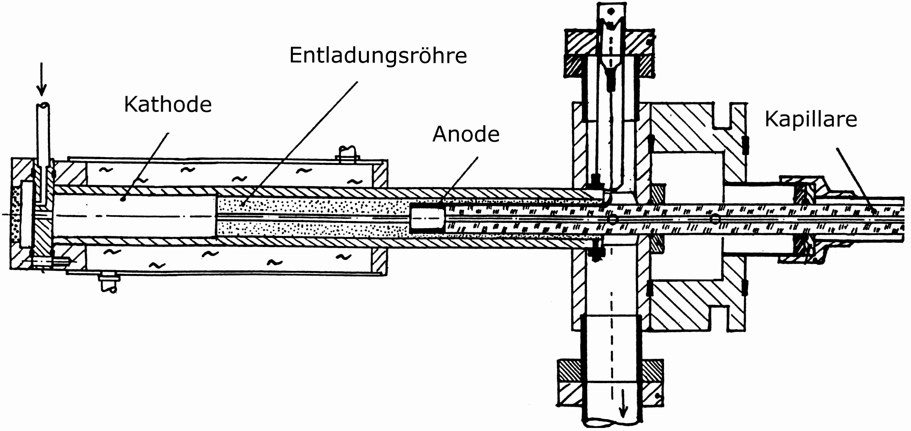
Heliumlampe Focus HIS 13
19
kathoden-Ionisationsvakuummeter) für den Messbereich von 10−10 bis 103 mbar ist ebenfalls
angeschlossen. Außerdem besitzt die Kammer einen Goldofen, um amorphes Au auf die Pro-
benoberfläche aufzudampfen. Nach dem Transfer in die Messkammer kann damit die Fermi-
Kante sehr genau bestimmt werden.
4.2
Heliumlampe Focus HIS 13
Im Labor diente die Gasentladungslampe HIS 13 der FOCUS GmbH (Vertrieb über OMICRON)
als Photonenquelle. In ihrem Aufbau ist erkennbar, dass die Hochspannungsanode in die Entla-
dungskapillare integriert wurde (Abbildung 4.1). Dadurch werden sehr hohe Intensitäten von
bis zu 1016 Photonen je Sekunde und Steradiant erreicht [30]. In der Entladungsröhre wird ein
Plasma gezündet und hauptsächlich der HeIα-Übergang (21,22 eV) zur Anregung der Proben
genutzt.
Abbildung 4.1: Querschnitt durch die Gasentladungslampe HIS 13 [30].
Diese Photonenenergie liegt im Bereich des VUV2. Dieser bezeichnet den Energiebereich
von 6,2 bis 124 Elektronenvolt. In diesem Bereich existiert kein Fenstermaterial, auch in Luft
werden Photonen dieser Energie stark absorbiert. Daher muss die Anbindung einer solchen
Photonenquelle über ein Vakuum erfolgen, daraus folgt auch die Bezeichnung VUV für die-
sen Bereich. Das Heliumplasma benötigt jedoch einen Druck von ca. 8 · 10−2mbar für einen
kontinuierlichen Brennvorgang. Um nun das Plasma vom UHV zu trennen, wird die Kapilla-
re zur Messkammer differentiell gepumpt. Seit 2007 findet eine Kapillare von 0,8 Millimetern
Durchmesser Verwendung. Mit dieser steigt der Druck in der Hauptkammer bei Betrieb der
Heliumlampe auf einen Wert von 5 · 10−10mbar an. Dieser Anstieg des Enddrucks in der Mess-
kammer stellt in der Regel kein Problem dar, da sich Helium als Edelgas inert verhält, also
keine chemische Bindung eingeht oder die Probe anderweitig verändert.
Im Gegensatz zu einem Messplatz am Synchrotron ist man mit einer Gasentladungslam-
pe auf eine Anregungsenergie festgelegt, die sich aus dem verwendeten Gas und dem Druck
ergeben. Die verwendeten Bedingungen sind auf eine Emission der HeIα-Linie optimiert. Sie
besitzt die beiden Satelliten HeIβ (23.09 eV) und HeIγ (23.74 eV). Mit relativen Intensitäten von
1,5 % bzw. 0,5 % können diese jedoch vernachlässigt werden [19].
2Vacuum Ultra Violett
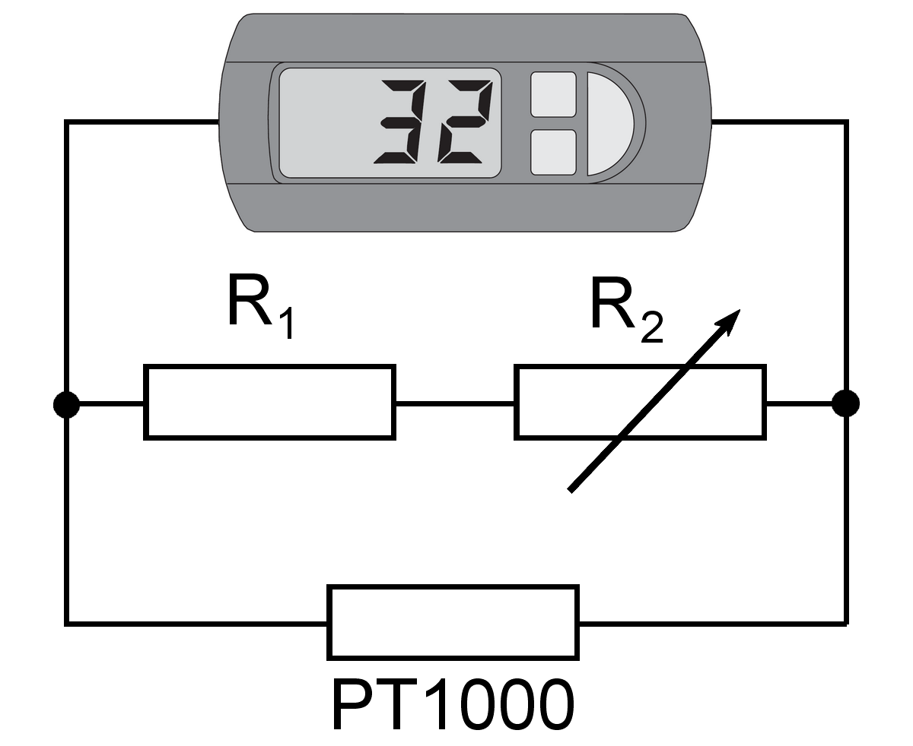

20
Experimentelles
4.3
Automatische N2 Nachfüllanlage
Die Versorgung der Gasentladungslampe mit Helium erfolgt aus einer 200 bar Gasflasche. Ihr
nachgeschaltet ist ein Druckminderer, der den Arbeitsdruck auf konstant 1 bar hält. Hinter dem
Druckminderer durchläuft das Helium zunächst eine Kühlfalle, bevor es durch ein Dosierven-
til in die Brennkammer geleitet wird. Die Kühlfalle hat die Aufgabe, die eventuell vorhande-
nen Verunreinigungen „auszufrieren“. Im Langzeitbetrieb könnten diese Verunreinigungen die
Leistungsfähigkeit und Zuverlässigkeit der Lampe einschränken. Zum Beispiel könnte Sauer-
stoff in der Brennkammer zu chemischen Reaktionen an der Anode oder Kathode führen.
Die Kühlfalle besteht aus einem Edelstahlbehälter von ca. 2 Litern Volumen, der UHV-dicht
abgeschlossen ist. Diese Falle befindet sich in einem thermisch isolierten Behälter, der mit flüs-
sigem Stickstoff gefüllt ist. Auf diese Weise besitzt auch die Innenwand der Kühlfalle eine
Temperatur von 77 Kelvin. Bei dieser Temperatur gehen alle Gase in den flüssigen oder festen
Aggregatzustand über (mit Ausnahme von Helium) und kondensieren aus bzw. frieren fest.
Vor Inbetriebnahme wird die Kammer zweifach mit Helium gespült, danach kann der Dauer-
betrieb aufgenommen werden.
Abbildung 4.2: Elektrische Schaltung zur
Renormierung des PT 1000, damit dieser
an einem PT100-Eingang verwendet wer-
Abbildung 4.3: Temperaturcontroller der Nachfüllanla-
den kann.
ge im Isolierbehälter für flüssigen Stickstoff.
Der als Kühlflüssigkeit verwendete flüssige Stickstoff geht im Laufe der Zeit durch Ener-
gieabgabe an die Umgebung in die Gasphase über. Deshalb muss in regelmäßigen Abständen
flüssiger Stickstoff in den Isolierbehälter nachgefüllt werden. Bisher ist dies manuell in einem
Intervall von 30 Minuten erfolgt, die Messungen konnten somit nur unter Betreuung durch-
geführt werden. Nachdem die Winkelverstellung durch die Installation von Schrittmotoren im
Jahre 2006 automatisiert wurde, stellte dies eine unnötige Einschränkung dar.
Auch der Nachfüllprozess für den flüssigen Stickstoff sollte automatisiert werden. Bestand-
teil dieser Diplomarbeit ist daher die Konstruktion einer automatischen Nachfüllanlage für
kryogene Flüssigkeiten. In Folge sollte es möglich sein, im Labor rund um die Uhr Messungen
vornehmen zu können.
Der erste Bestandteil dieser Nachfüllanlage ist ein passendes Magnetventil, das in die Lei-
tung zwischen Devargefäß und Phasenseparator zwischengeschaltet wird. Die Mechanik des
Ventils muss wasserdicht konstruiert sein, damit kondensierender und erstarrender Wasser-
dampf der Umgebungsluft nicht zu einer Blockierung des Ventilmechanismus führt. Weiterhin
Automatische Stickstoff-Nachfüllanlage
21
muss das verwendete Dichtelement auf tiefe Temperaturen ausgelegt sein. Diese Anforderun-
gen werden vom Magnetventil ASCO Joucomatic cryogenic 263LT (SCE263B206LT) mit PTFE3-
Dichtung erfüllt.
Der zweite Teil der Anlage besteht aus einem Füllstandssensor mit angeschlossener Aus-
werteelektronik, um das Magnetventil anzusteuern. Wir haben uns entschieden, den Füllstand
mithilfe eines Temperatursensors zu überprüfen. Dazu sind eine Reihe von Besonderheiten zu
berücksichtigen, die im Folgenden erörtert werden.
Wir verwenden einen Temperaturcontroller Tempatron PJ32 V6P. Er besitzt zwei Eingänge
für einen PT100 sowie einen Relaisausgang, der bis zu 16 Ampere schaltet. Der ausgewertete
Temperaturbereich beträgt -50 ◦C bis +150 ◦C. Für den Platinsensor PT100 ist der temperatur-
abhängige Widerstandswert (Temperatur T hier in Grad Celsius) nach folgender Näherung
definiert [31]:
R(T ) = R0(1 + aT + bT 2 + c(T − 100 ◦C)T 3)
(4.2)
a
=
3, 9083 · 10−3 ◦C−1
b
=
−5, 775 · 10−7 ◦C−2
c
=
−4, 183 · 10−12 ◦C−4
Der Nennwiderstand eines PT100 ist für die Temperatur von 0 ◦C definiert und beträgt
R0 = 100Ω. Sein Widerstandswert sinkt bei der Temperatur von flüssigem Stickstoff auf 20,3 Ω
ab. Die Auswerteelektronik des Temperaturcontrollers hat jedoch seine untere Messgrenze bei
einem Widerstandswert von 80,3 Ω, entsprechend der Temperatur von -50 ◦C.
Eine Lösung wäre nun die Reihenschaltung mit einem Widerstand von 79,7 Ω. Dann würde
eine Anzeige des Controllers von „0“ exakt der Temperatur flüssigen Stickstoffs entsprechen.
Der Temperaturkoeffizient des PT100 beträgt bei dieser Temperatur α(77K) = 4, 27 · 10−3K−1
im Gegensatz zu α(300K) = 3, 85 · 10−3K−1 bei Raumtemperatur. Dies ist jedoch nicht wei-
ter von Belang, da keine exakte Temperatur gemessen werden soll, sondern eine zuverlässige
Anzeige der Füllhöhe gewünscht ist.
Es stellte sich jedoch heraus, dass die Temperatur des Sensors einen Zentimeter oberhalb
der Flüssigkeit durch die gute Isolationswirkung des Behälters nur 83K (-190 ◦C) beträgt, die
Digitalanzeige folglich nur auf „6“ steigen würde. So suchten wir nach einer Möglichkeit, die
Messgenauigkeit zu erhöhen, um feinere Einstellungen des Nachfüllsystems vornehmen zu
können.
Zunächst haben wir den Temperatursensor durch einen PT1000 ersetzt, da er eine zehnmal
höhere Empfindlichkeit besitzt. Jedoch beträgt sein Widerstandswert bei 77 K noch 202,64 Ω,
liegt also wieder außerhalb des Messbereiches unseres Temperaturcontrollers. Um diesen Wert
zu verringern, haben wir zwei weitere Widerstände parallelgeschaltet (siehe Abbildung 4.2).
Der Gesamtwiderstand dieser elektrischen Schaltung ergibt sich nach der Formel
1
1
1
=
+
.
(4.3)
Rparallel
R1 + R2
RPT1000
In einem zweiten Schritt haben wir die Anzeige am Temperaturcontroller auf die Einheit
Fahrenheit eingestellt. Da der eigentliche Messwert egal ist, wird dadurch die relative Sensiti-
3PolyTetraFluorEthen, umgangssprachlich als Teflon bezeichnet
22
Experimentelles
vität eines Digits zum Widerstandswert um den Faktor 1,8 erhöht. Die „0“ entspricht nun einer
Temperatur von 255,6 K (-17,8 ◦C) und einem Widerstand R = 93, 11Ω des Temperatursensors.
Für den Sollwert von 93,11 Ω muss die Reihenschaltung von R1 und R2 nach (4.3) einen
Widerstandswert von 172,3 Ω ergeben. Aus der E12-Reihe wurde ein R1 = 150 Ω Festwiderstand
sowie ein R2 = 39 Ω Potentiometer ausgewählt. Mit dem Potentiometer kann der Nullpunkt für
die Messelektronik genau abgeglichen werden. Die Empfindlichkeit dieser Parallelschaltung
beträgt α = 8, 35 · 10−3K−1 und ist damit doppelt so groß wie die Reihenschaltung eines PT100
mit einem passenden Festwiderstand.
Abschließend musste die Anlage noch kalibriert werden. Die Anzeige „0“ entspricht nun
der Temperatur von flüssigem Stickstoff. Der Sollwert ist auf „5“ eingestellt, die Hysteresis
(A0) auf ihrem Maximalwert. Bei dieser Einstellung schaltet sich die Nachfüllanlage bei einem
Messwert von „20“ ein. Für den optimalen Zeitpunkt der Abschaltung des Nachfüllprozesses
ist die Anzeigestabilität (/2) auf 7 eingestellt. Zur Sicherheit beträgt die Mindestausschaltzeit
der Regelausgänge (c2) 15 Minuten.
Im praktischen Einsatz erfolgt alle 35 Minuten eine automatische Nachfüllung des Kühlbe-
hälters. Mit einem 100l-Dewar kann so 60 Stunden ununterbrochen gemessen werden. Durch
die Schaltvorgänge des Magnetventils treten in den aufgenommenen Spektren Spikes auf. Da
diese Vorgänge jedoch auf ein Minimum reduziert wurden, halten sich diese in vertretbaren
Grenzen. Ein Auswerteprogramm für die Spektren der AR65 [32] ist mit einem Algorithmus
zur Erkennung und Entfernung von Spikes ausgestattet.
4.4
BUS-Beamline bei BESSY
Die meisten Photoemissionsmessungen dieser Diplomarbeit wurden an der BUS-XUV-Beamline
[33] bei BESSY durchgeführt. Die Messung an einem Synchrotron zeichnet sich durch eine Rei-
he von Vorteilen gegenüber der Messung mit einer Gasentladungslampe aus:
• Die Synchrotronstrahlung besitzt einen großen Spektralbereich, auf den mittels eines Mo-
nochromators selektiv zugegriffen werden kann. Die Photonenenergie ist somit einstell-
bar.
• Die Strahlung ist auf einen kleinen Bereich fokussiert (< 100 µm).
• Verglichen mit der Gasentladungslampe ist der Photonenfluss um den Faktor 10 höher
(siehe [19], zu beachten: Undulatorbeamline, gilt nicht unbedingt für Dipolbeamline).
• Es herrschen sehr gute UHV-Bedingungen, da kein Edelgasplasma zur Anregung ver-
wendet wird.
• Synchrotronlicht ist in der Hauptebene linear polarisiert, somit sind polarisationsabhän-
gige Messungen möglich. Zur Zeit werden alle Undulatoren bei BESSY umgebaut, damit
eine beliebige Polatisation einstellbar ist.
Diesen vielen Vorteilen gegenüber steht der technische Aufwand zum Betrieb eines Syn-
chrotrons. Als Photonenquelle in Laborgröße stehen sie zur Zeit noch nicht zur Verfügung,
befinden sich aber in der Entwicklungs- und Testphase. Die Messungen mussten bei BESSY an-
gemeldet werden und innerhalb der zugeteilten zwei Wochen durchgeführt werden. Während


Röntgenuntersuchung mittels Laue
23
dieser Messzeit steht der Strahl nur 50 % der Zeit zur Verfügung, da der Undulator U125/2
noch von zwei weiteren Gruppen genutzt wird.
Der Undulator ist für Energien von 10 bis 600 eV ausgelegt. Aus diesem Spektrum wird
die gewünschte Photonenenergie mit einem sphärischen Gittermonochromator (SGM) ausge-
wählt. Zur Zeit stehen zwei Gitter mit 500 (30 - 125 eV) bzw 1100 (64 - 180 eV) Linien pro
Millimeter zur Verfügung. Das Gap des Undulators kann automatisch an die Energie des Mo-
nochromators angepasst werden.
Die Intensität der in Photoemission emittierten Elektronen steht in (weitgehend) linearem
Zusammenhang mit der Intensität der anregenden Photonen. Es ist daher notwendig, die In-
tensität der Anregung zu kennen, um gemessene Spektren renormieren oder miteinander ver-
gleichen zu können. Standardmäßig ist zu diesem Zweck ein Goldnetz kurz vor dem Experi-
ment in den Strahlgang der Beamline geschaltet. Es absorbiert weniger als 5 % der Strahlung
und kann während der Photoemissionsmessung im Strahl belassen werden. Mithilfe des Gold-
netzes kann ebenfalls das Gap des Undulators auf maximale Intensität optimiert werden.
Abbildung 4.4: Intensität der BUS XUV-Beamline bei verschiedenen Photonenenergien, gemessen
mit der Si-Diode im Strahlstrom. Die Messwerte wurden auf einen Strom von 200 mA im Synchrotron
renormiert.
In der Messzeit im August 2007 stand das Goldnetz leider nicht zur Verfügung. Die Inten-
sität der Beamline konnte jedoch mit einer Siliziumdiode bestimmt werden, die in den Strahl
gebracht wurde. Allerdings absorbiert sie alle Photonen, eine simultane Messung des Photo-
nenstromes zur Photoemissionsmessung ist nicht möglich. Daher wurde die Energieabhängig-
keit der Intensität in eine Tabelle aufgenommen und auf einen Wert des Ringstromes von 200
mA normiert (siehe Abbildung 4.4). Ausgehend vom tatsächlichen Wert des Ringstromes und
der bekannten Energie des Monochromators kann die Intensität nun berechnet werden. Der ak-
tuelle Wert kann auf der Webseite von BESSY mit einem Java-Applet ausgelesen werden. Man
kann auch eine Tabelle mit den Daten der letzten 24 Stunden ausgeben. Zudem steht ein Refe-
renzkanal zur Verfügung, der in die eigenen Auswertesoftware eingebunden und ausgelesen
werden kann. Der Wert lässt sich so in die Messdatei integrieren.
4.5
Röntgenuntersuchung mittels Laue
Eine übliche Methode der Kristallstrukturanalyse ist die Untersuchung von Proben nach dem
Laue-Verfahren. Dabei wird die einkristalline Probe mit weißem Röntgenlicht bestrahlt und
die gebeugten Intensitäten mit einer Photoplatte aufgenommen. Die Beugungsmaxima ent-


24
Experimentelles
sprechend jeweils einer Gitterebene (hkl), die die Lauesche Interferenzbedingung
~
k − ~
k0 = ~ghkl
|~k| = | ~
k0|
(4.4)
erfüllt. Die Aufnahmen in Transmission werden auch als (gewöhnliche) Lauegramme be-
zeichnet. Reflexionaufnahmen tragen die Bezeichnung Epigramm. Für Transmissionsmessun-
gen müssen die Proben hinreichend dünn sein. Die Lauemessungen dieser Arbeit wurden vor-
nehmlich an der Moskauer Lomonosow-Universität (Moskovski ˇi Gosudarstveny ˇi Univer-
sitet imeni Lomonosova) am Lehrstuhl für Festkörperphysik (Kafedra Fiziki tv¨
erdogo
tela) von Frau Inna Telegina (Telegina Inna Vasiljevna) durchgeführt. Die verwende-
te Röntgenkamera hat die Bezeichung RKW-86A (Rentgenovska Kamera Vraweni RKV-
86A).
Abbildung 4.5: Röntgenkamera RKV-86A in Moskau. Zu erkennen sind die Röntgenröhre, Mi-
kroskop, Goniometer, Photoplatte, Absorber und Kapillare.
In Abbildung 4.5 erkennt man den typischen Aufbau für ein Epigramm. Im Vordergrund ist
das Mikroskop mit Lichtquelle zu sehen, zwischen beiden befindet sich ein Absorber. Hinter
dem Goniometer ist das Gehäuse für die Photoplatte befestigt. In der Mitte enthält es eine
Bohrung für die Kapillare, durch welche die Röntgenstrahlung kollimiert wird. Am rechten
Bildrand erkennt man schließlich die Röntgenröhre. Die Abmessungen der Epigramme (80 ×
100 mm) sind etwas geringer als die der Lauegramme (120 × 100 mm). Letztere besitzen kein
charakteristisches Loch in der Mitte.
Das rechte Bild von Abbildung 4.5 zeigt das Goniometer, auf dem die zu untersuchende
Probe montiert wird. Wie man erkennen kann, lässt sich die relative Positionierung auf ein
zehntel Grad genau in beiden Achsen vornehmen. Auch in den Translationsfreiheitsgraden
lässt sich die Probe sehr genau (ca. 0.1 mm) im Röntgenstrahl positionieren. Damit ist es auch
möglich, eine ortsaufgelöste Laueuntersuchung durchzuführen. Dies wird in einigen Fällen
gewünscht.

Kapitel 5
Das Material Hg1-XCdXTe und
Charakterisierung der Proben
5.1
Eigenschaften
Die vollständige Bezeichnung Hg1-XCdXTe deutet bereits an, dass dieses Material aus den bei-
den Halbleitern CdTe und HgTe zusammengesetzt ist. In einigen Eigenschaften sind sich die
beiden Ausgangsmaterialien sehr ähnlich. Zum Beispiel sind die Gitterkonstanten nur etwa 7
Promille voneinander entfernt (6,488 bzw 6,445 Å, siehe Abbildung 5.2). Eine andere funda-
mentale Eigenschaft eines Halbleiters ist die Breite seiner Energielücke. In diesem charakteris-
tischen Merkmal unterscheiden sich die beiden Materialien grundlegend.
Abbildung 5.1: Breite der Energielücke von Hg1-XCdXTe in Abhängigkeit der
Komposition x nach Formel (5.3). Der Einfluss der Temperatur auf den Kur-
venverlauf ist für 80K und 300K demonstriert.
Bei CdTe handelt es sich um einen konventionellen II-VI-Halbleiter [11]. Er besitzt eine
direkte Bandlücke von 1,56 eV (300 K).
Im allgemeinen besitzt das Valenzbandmaximum in Halbleitern der Zinkblende-Struktur
eine Γ8-Symmetrie, während das Leitungsbandminimum eine Γ6-Symmetrie aufweist. Daher
25
26
Das Material HgCdTe und Charakterisierung der Proben
ist die fundamentale Energielücke E0 für II-VI-Halbleiter wie folgt definiert:
E0 = E(Γ6) − E(Γ8) .
(5.1)
Im Falle von HgTe fällt jedoch das Leitungsbandminimum mit dem Valenzbandmaximum
zusammen, sie weisen eine Γ8-Symmetrie auf. Das Γ6 ist unter das Valenzbandmaximum ge-
klappt und die Bandlücke daher nach Definition (5.1) negativ. Man spricht von einer inver-
tierten Bandstruktur. Bei einer Temperatur von 80 Kelvin beträgt die Energielücke von HgTe
EG = −0.283eV [34]. Mit der invertierten Bandstruktur lassen sich die Ergebnisse erklären,
die in magnetooptischen Transportmessungen sowie Experimenten zum Hall-Effekt gefunden
wurden. Die negative Bandlücke sowie das umgeklappte Γ6-Band konnten in unserer Arbeits-
gruppe experimentell mittels winkelaufgelöster Photoemission bestätigt werden [34].
Die beiden Halbleiter CdTe und HgTe lassen sich nun in beliebigem Verhältnis miteinander
mischen. Bei der Angabe der vollständigen Summenformel hat sich die Notation Hg1-XCdXTe
etabliert. Daher findet man oft nur die Bezeichnung HgCdTe und den zugehörigen Wert von
x. Eine Reihe von Eigenschaften dieses neuen ternären Kristalls folgt weitgehend einer Inter-
polation der Daten seiner Ausgangsmaterialien, ihren Anteilen entsprechend. Dies trifft zum
Beispiel auf die Gitterkonstante (Kapitel 2.1) oder auf die Dichte zu [35]:
ρ = 8, 076 − 2, 23x(±0, 02)gcm−3
(5.2)
Auch die Bandlücke der Legierung folgt in erster Näherung einem solchen linearen Zu-
sammenhang. Zudem hat jedoch die Temperatur einen großen Einfluss auf den Betrag der
Bandlücke. In einer Auswertung von 22 Arbeiten erstellte Hansen et al [36] eine empirische
Gleichung, die heute am häufigsten genutzt wird:
EG = −0.302 + 1.93x − 0.81x2 + 0.832x3 + 5.35(1 − 2x)10−4T
(5.3)
Zur Verdeutlichung dieses Zusammenhangs und der Temperaturabhängigkeit dient Abbil-
dung 5.1. So beträgt die Bandlücke für x = 0, 2 bei 80 Kelvin nur die Hälfte des Wertes bei
Raumtemperatur (80 meV statt 155 meV). Dies ist insbesondere von Bedeutung, da Infrarot-
detektoren oftmals gekühlt werden, um das thermische Rauschen minimal zu halten. In den
letzten Jahren sind jedoch große Fortschritte gemacht worden, um einerseits das Eigenrauschen
zu minimieren und andererseits den Kühlaufwand zu verringern. Da HgCdTe ein intrinsischer
Halbleiter ist, besitzt er seine hohe Quanteneffizienz nicht erst bei extrem geringen Temperatu-
ren, wie dies bei Quantenwells der Fall ist. Deshalb wird dieses Material auch in Zukunft für
Infrarotdetektoren unverzichtbar bleiben.
Übliche Zusammensetzungen für den mittleren bis langwelligen Spektralbereich (3 - 14 µm)
besitzen x-Werte zwischen 0,2 und 0,4. Mit größeren x-Werten kann die Grenzwellenlänge auf
bis zu 0,7 µm verringert werden, entsprechend der Bandlücke von CdTe. Da die Bandlücke von
HgTe negativ ist, können theoretisch beliebig kleine Bandlücken erreicht werden. In der Praxis
wurde HgCdTe nicht nennenswert über 25 µm Wellenlänge hinaus verwendet [37].
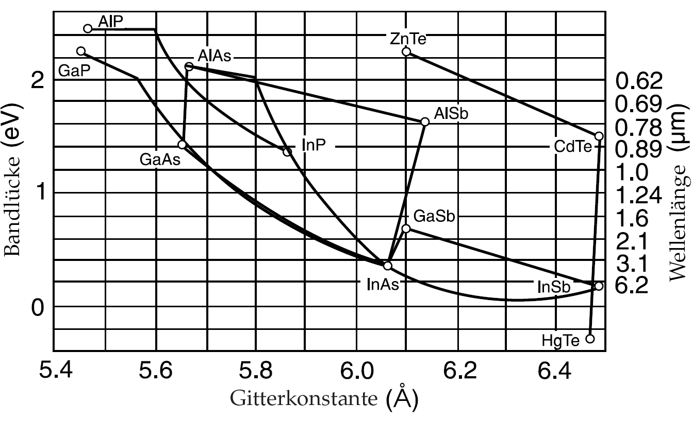
Herstellungsverfahren
27
Abbildung 5.2: Abhängigkeit der Bandlücke und Gitterkonstante von der Zusammenset-
zung für HgCdTe und CdZnTe Substrate. Zum Vergleich sind einige III-V-Verbindungen
angegeben [37].
5.2
Herstellungsverfahren
Die Verfahren zur Herstellung von HgCdTe haben sich wie bei jedem anderen Halbleiter wei-
terentwickelt. In den letzten 50 Jahren [1] wurden vor allem die folgenden Kristallzüchtungs-
methoden verwendet:
• Blockwachstum (bulk growth)
– Festkörper-Rekristallisation (SSR - solid state recrystallisation, auch CRA - Cast Re-
crystallise Anneal [38] oder QA - quench anneal [39])
– Hochdruckverfahren nach Bridgman [40]
– Zonenschmelzverfahren (traveling heater method [41], traveling solvent)
• Flüssigphasenepitaxie (LPE - liquid phase epitaxy [42])
• Chemische Gasphasenepitaxie (CVD - chemical vapour deposition; auch VPE - vapour
phase epitaxy)
– Metallorganische Gasphasenepitaxie (MOVPE - metal-organic VPE)
– Molekularstrahlepitaxie (MBE - molecular beam epitaxy)
– Isotherme Gasphasenepitaxie (ISOVPE - isothermal-VPE [43])
Die zeitliche Entwicklung der einzelnen Methoden zeigt Abbildung 5.3. Die Kristallzucht
mit dem modifizierten Bridgman-Verfahren gehört keineswegs der Vergangenheit an, sondern
ist immer noch Bestandteil der aktuellen Forschung [44]. Im Folgenden möchten wir uns nur
mit Blockwachstum beschäftigen, da die untersuchten Proben auf diese Weise hergestellt wur-
den [45].
Eine große Schwierigkeit bei der Herstellung von Blockkristallen (als Ingot bezeichnet, eng-
lisch auch boule) ist der hohe Dampfdruck des Quecksilbers bei der Schmelztemperatur von

28
Das Material HgCdTe und Charakterisierung der Proben
Abbildung 5.3: Übersicht der unterschiedlichen Züchtungsmethoden für Hg-
CdTe und ihre zeitliche Entwicklung von 1958 bis heute. Die überwiegend an-
gewandte Produktionsmethode ist die Flüssigphasenepitaxie (LPE, nach [37]).
HgCdTe (T ≈ 950 ◦C). Die in der Schmelze stöchiometrisch vorliegenden Ausgangsmateria-
len werden sehr schnell verdichtet, damit es beim Erstarren nicht zu einer Entmischung oder
Abscheidung von HgTe kommt. Ursache einer solchen Trennung sind die unterschiedlichen
Schmelztemperaturen von CdTe und HgTe. Dennoch ist die Konzentration von HgTe im Kern
dieser Blöcke etwas höher. Zudem sind diese Ingots hoch polykristallin. Daher werden sie nach
dem Erstarren nochmals wärmebehandelt (anneal), also bis unterhalb des Schmelzpunktes er-
hitzt. Auf diese Weise wächst die Korngröße bedeutend an. Bei dem Bridgman-Verfahren ent-
stehen ebenfalls polykristalline Ingots. Diese weisen in Erstarrungsrichtung eine Variation der
Komposition auf. Doch wird dies genutzt, um in einem einzigen Wachstumsprozess Ausgangs-
materialien für beide interessanten Wellenlängenbereiche (3 - 5 und 8 - 12 µm) herzustellen [46].
Die Korngrößen liegen bei beiden Verfahren im Bereich von 50 - 500 µm [47].
Für die weitere Verwendung werden die Blockkristalle oder Ingots in Scheiben von ca.
500 µm Dicke gesägt. Neben normalen Fadensägen kommen auch elektropyrolytische Tren-
nungsverfahren zur Anwendung. Danach werden sie poliert und auf die gewünschte Dicke
(oft 10µm) gebracht. Diese Schritte sind jedoch sehr arbeitsintensiv und waren eine starke Mo-
tivation, nach anderen Verfahren zu suchen. Die stark toxische Wirkung von Quecksilberdämp-
fen hat außerdem in einer Vielzahl von Ländern zu gesetzlichen Einschränkungen geführt, die
ebenso die Kristallzüchtung betreffen.
Ein Wachstum auf einem Trägermaterial stellt hohe Anforderungen an das Substrat, da
die Qualität der aufgewachsenen Schichten stark mit diesem korreliert ist. Die große Bedeu-
tung der Gitterfehlanpassung auf die Kristallqualität und Oberflächenmorphologie der epitak-
tischen Schichten wurde vor 20 Jahren entdeckt. Ein gutes Substrat für die meisten interessan-
ten HgCdTe-Verbindungen war mit Cd0.96Zn0.04Te gefunden (siehe Abbildung 5.2). Dieses Ma-
terial wird noch immer in sehr guter kristalliner Qualität mittels „bulk growth“-Verfahren her-
gestellt. Der störende hohe Dampfdruck des Quecksilbers tritt hier nicht auf.
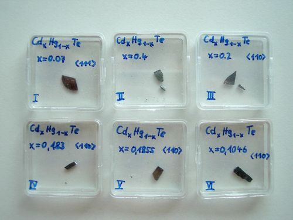
Übersicht der untersuchten Proben
29
5.3
Übersicht der untersuchten Proben
Grundlage dieser Diplomarbeit, deren Thema 2004 ausgeschrieben wurde, waren drei Kristal-
le von Hg1-XCdXTe mit x-Werten zwischen 0.07 und 0,4. Sie sind in Abbildung 5.4 mit I bis
III gekennzeichnet. Diese Proben wurden vom Institut für Tieftemperaturphysik an der Staat-
lichen Moskauer Lomonossow-Universität zur Verfügung gestellt. Insbesondere besteht eine
enge Zusammenarbeit mit Dr. Nikiforov, er hatte die Beschaffung dieser Proben organisiert. Im
Dezember 2006 wurden uns drei weitere Proben zur Verfügung gestellt. Sie sind mit IV bis VI
bezeichnet.
Abbildung 5.4: Übersicht der sechs untersuchten Proben
Hg1-XCdXTe
I
II
III
IV
V
VI
Wert für X
0.07
0.4
0.2
0.183
0.1955
0.105
Gewicht
186.3 mg
130.3 mg
158.5 mg
129.2 mg
248.5 mg
108.9 mg
Orientierung
[111]
[110]
[110]
[110]
[110]
Tabelle 5.1: Einige Kenndaten der untersuchten Kristalle
Zu den Proben wurden nur wenige Daten mitgeliefert. Eine Übersicht mit einigen Kennda-
ten ist in Tabelle 5.1 zu finden. Eine mitgelieferte Angabe ist der charakteristische Wert für x in
Hg1-XCdXTe. Allerdings schwankt die Genauigkeit dieses Wertes von einer bis vier Nachkom-
mastellen, ein relativer Fehler ist nicht angegeben. Es lässt sich leider nicht mehr rekonstru-
ieren, auf welche Weise die Proben charakterisiert wurden. Es ist weder der Zeitpunkt noch
die Methode bekannt, daher kann keine Aussage über die Genauigkeit dieser Angabe gemacht
werden.
Die zweite Angabe betrifft die Orientierung, die zu fünf Kristallen angegeben war. Jedoch
fehlt auch hier ein Hinweis, auf welche Fläche der Kristalle sich diese Angabe bezieht und ist
daher wertlos. Somit bestand eine der ersten Aufgaben darin, die Kristalle neu zu charakterisie-
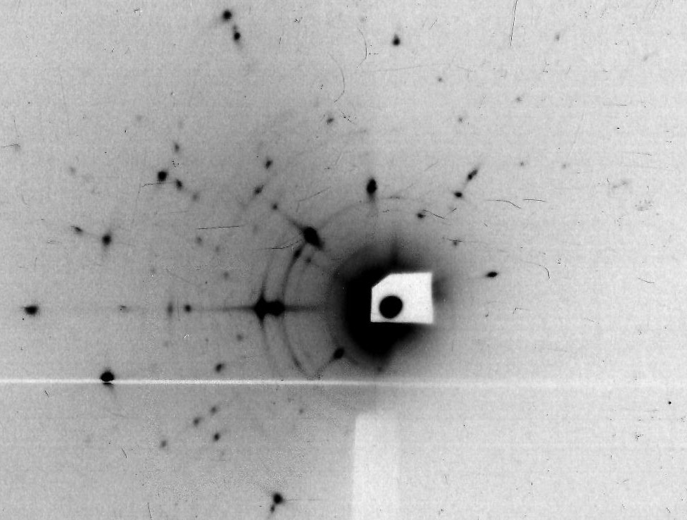
30
Das Material HgCdTe und Charakterisierung der Proben
ren. Die angegebenen Massen wurden mit einer genauen Waage des Chemielabors bestimmt.
In Summe basiert diese Diplomarbeit demnach auf weniger als einem Gramm Ausgangsmate-
rial. Die einzelnen Proben besitzen eine Dicke von 600 bis 900 µm.
Ende 2007 wurden noch einmal in Moskau die Kenndaten der Kristalle gesucht. Doch leider
war auch ihr Herkunftsort nicht mehr zu bestimmen. Mit großer Sicherheit wurden diese Kris-
talle nicht in einem Institut gezüchtet, sondern in einer Fabrik, die sich auf diese Materialien
konzentriert hatte. Die Ergebnisse der eigenen Züchtungsversuche im Moskauer Institut wa-
ren nicht zufriedenstellend. Als Kristallzuchtverfahren wurde ein Blockwachstum verwendet
(siehe 5.2), wahrscheinlich das Bridgman-Verfahren (siehe [44], nach [45]).
5.4
Laue-Aufnahmen zur Kristallqualität
Ausgehend von den Besonderheiten des Herstellungsverfahrens der HgCdTe-Proben ist es not-
wendig, die Kristallqualität zu prüfen. Insbesondere kann nicht davon ausgegangen werden,
dass es sich um Einkristalle handelt. Vielmehr sollten polykristalline Proben mit Korngrößen
von einigen Mikrometern erwartet werden [47].
Die Röntgenbeugung nach Laue ist gut geeignet, um die Kristallinität und Orientierung
eines ganzen Volumens zu bestimmen. Dazu wird ein Lauegramm aufgenommen, also eine
Transmissionsaufnahme erstellt. Damit jedoch auf dem Film hinter der Probe eine ausreichen-
de Intensität der gebeugten Strahlung detektiert werden kann, müssen die Proben hinreichend
dünn sein. Mit der verwendeten Anlage (Kapitel 4.5) konnte noch eine Probendicke von 600
µm untersucht werden.
Abbildung 5.5: Transmissionsaufnahme der Röntgenbeugung nach Laue von Probe I (x=0,07). Die
scharfen Beugungsmaxima in diesem Lauegramm deuten auf eine homogene Orientierung der
Kristalle hin. Die sichtbaren Ringe hingegen erinnern an die Pulvermethode von Debye-Scherrer
und zeigen deutlich, dass kein Einkristall vorliegt. Diese Ringe werden an den Gitterebenen der
Korngrenzen in dieser polykristallinen Probe erzeugt.


Laue-Aufnahmen zur Kristallqualität
31
Das Ergebnis der Transmissionmessung zeigt Abbildung 5.5. Wie zu erwarten enthält die
Aufnahme ringförmige Schwärzungen von den polykristallinen Anteilen der Probe. Es han-
delt sich demnach bei den zur Verfügung gestellten Kristallen nicht um Einkristalle, wie es
im Thema der Diplomarbeit angegeben wurde. Allerdings besitzen die Körner eine einheitli-
che Orientierung, wie aus den punktförmigen und relativ scharfen Reflexen hervorgeht. Die
weniger scharfen Punkte der intensiven Reflexe ergeben sich aus der Dimension und Intensi-
tätsverteilung des kollimierten Röntgenstrahls.
Die Reflexionsaufnahmen hingegen zeigen eine sehr klare Struktur und weder Ringe von
polykristallinen Anteilen noch Punkte anderer Kristallorientierungen. Bei der Herstellung der
Proben wurden diese aus den Blockkristallen herausgesägt und die Oberfläche poliert. So
konnte der Röntgenstrahl der Röntgenapparatur mit einem speziellen Mikroskop (Abbildung
4.5) exakt senkrecht zur Oberfläche ausgerichtet werden. Die Orientierung der Kristallstruktur
ist nicht immer parallel zur Probenoberfläche, sondern auch gedreht (Abbildung 5.6) oder um
einen gewissen Winkel (Abbildung 5.7) verkippt.
Abbildung 5.6: Epigramm von Probe II (x=0,4).
Abbildung 5.7: Die Kristallstuktur von Probe V
Deutlich ist die gedrehte, doch gut zentrierte
(x=0,1855) ist um 4 Grad zur Oberflächennorma-
{110}-Orientierung zu erkennen.
len verkippt (Orientierung {110}).
Mit den Laueaufnahmen wurde die Orientierung aller sechs Proben überprüft. Auch die-
se Messungen wurden mit der Anlage in Moskau durchgeführt. Die Aufnahmen wurden in
40mm Abstand mit 32 kV bei 30mA in 10 Minuten Belichtungszeit aufgenommen. Exempla-
risch dienen die Aufnahmen 5.6 und 5.7.
Aus den entwickelten Photos konnte abgelesen werden, dass die urspünglichen Blockkris-
talle in Längsrichtung [111]-orientiert waren. Senkrecht dazu wurden sie in Scheiben geschnit-
ten. Die Oberflächen dieser Scheiben sind demnach (111)-Flächen. Sie wurden poliert und bil-
den jeweils die Flächen unserer Proben mit den größten Abmaßen. Bei unseren Proben handelt
es sich somit um Bruchstücke oder Restmaterial dieser Scheiben. Die Seitenflächen schließen
einen Winkel von 90◦ zur Oberfläche ein und sind (110)-orientiert. Da dies auch die natürliche
Spaltfläche von ZnS-Kristallen ist, lassen sich die Proben parallel zu den Seitenflächen sehr gut
spalten.
32
Das Material HgCdTe und Charakterisierung der Proben
5.5
Bestimmung der Zusammensetzung mittels energiedispersiver
Röntgenspektroskopie
Jeweils nach den Photoemissionsmessungen im März und August 2007 wurde die Zusammen-
setzung der gemessenen Proben mittels energiedispersiver Röntgenspektroskopie oder EDX1
untersucht. Diese Messungen wurden von Dr. Schäfer in unserem Institut durchgeführt.
Das Ergebnis von 15 untersuchten Proben, die an jeweils drei Punkten der Probenoberflä-
che spektroskopiert wurden, finden sich im Anhang A in den Tabellen A.1 und A.2. Aus der
Vielzahl der verfügbaren Daten wurde das statistische Mittel gebildet und in Tabelle 5.2 zu-
sammengefasst. Probe III wurde weder per Photoemission noch per EDX untersucht, daher
liegen hierzu keine Daten vor.
Probe
Referenzwert x
Anteil Cd
Anteil Hg
Anteil Te
Messungen
I
0.07
0,063 ± 0,003
1,031 ± 0,007
0,907 ± 0,005
15
II
0.4
0,390 ± 0,005
0,650 ± 0,005
0,957 ± 0,007
6
III
0.2
0
IV
0.183
0,163 ± 0,015
0,92 ± 0,01
0,920 ± 0,005
3
V
0.1955
0,160 ± 0,006
0,92 ± 0,01
0,920 ± 0,005
12
VI
0.105
0,110 ± 0,007
0,978 ± 0,009
0,910 ± 0,006
9
Tabelle 5.2: Ergebnisse der EDX-Messungen an fünf der verfügbaren Proben. Die gemessenen
relativen Intensitäten wurden auf 2 Atome pro Einheitszelle renormiert.
Zunächst fällt der Tellur-Anteil in der Einheitszelle ins Auge. Ausgehend von der Sum-
menformel Hg1-XCdXTe sollte dieser stets 1 betragen. Jedoch wird er in EDX wiederholt und
reproduzierbar zu gering gemessen. Der statistische Mittelwert des Telluranteils aus 45 Mes-
sungen beträgt 0,9176 ± 0,0005. Die Genauigkeit jeder Einzelmessung beträgt 8 % relativen
Fehlers für Tellur (siehe Anhang A) und genügt nicht, um die Abweichung zu erklären.
Offensichtlich liegt ein systematischer Fehler vor. Mangels Vergleichsmessung kann nicht
gesagt werden, ob dieser Fehler durch die EDX-Anlage hervorgerufen wird oder die Proben tat-
sächlich einen geringen Tellur-Anteil aufweisen. Allerdings geben eine Vielzahl anderer Mes-
sungen mit der EDX-Anlage keinen Anlass zur Beanstandung. Mit großer Wahrscheinlichkeit
weisen daher die Kristalle einen Mangel an Tellur auf.
Die anderen Messwerte bestätigen recht gut die angegebenen Daten der Zusammenset-
zung. Aufgrund der Normierung kann der relative Anteil Cadmium direkt mit dem Referenz-
wert für x verglichen werden. Doch wie bereits erwähnt wurde, ist die Methode, mit der die
Referenzwerte bestimmt wurden, unbekannt. Ein weiterer Vergleich mit den Messwerten ist
daher nicht sinnvoll. Zudem liegen keine Angaben zur Genauigkeit der Referenzwerte vor.
5.6
Überprüfung der Kristalle mit dem Atomkraftmikroskop
Im Moskauer Institut ABMR (Advanced BioMedical Research) stand uns ein Atomkraftmikro-
skop oder AFM2 zur Verfügung. So wurde die Oberfläche aller sechs Proben auch mit dieser
1EDX - Energy Dispersive X-ray spectroscopy
2AFM - Atomic Force Microscope
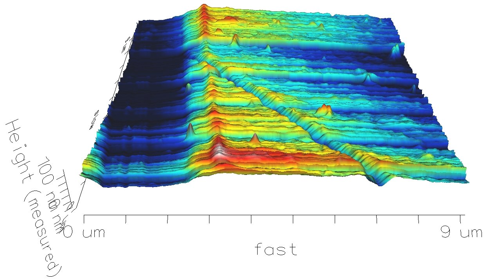

Überprüfung der Kristalle mit dem Atomkraftmikroskop
33
Methode untersucht. Die Messungen erfolgten an den (111)-Flächen, die beim Zertrennen der
Blockkristalle durch Sägen und Polieren präpariert worden waren (siehe Kap. 5.4).
In Abbildung 5.8 sieht man die parallenen Strukturen, die beim Trennen der Kristalle mit-
tels Elektroerosion entstehen. Man erkennt in der linken Bildhälfte einen „Kanal“ von 3 µm
Breite und 50 nm Tiefe. Die verbliebenen Spuren erscheinen nur aufgrund der starken Ver-
größerung bzw. des kleinen Ausschnittes parallel, relativ zum Blockkristall sind sie natürlich
rund.
Wenn wir nun einen Ausschnitt von 3×3 µm näher betrachten, so erkennt man noch weitere
feine parallele Strukturen innerhalb des Kanals, die eindeutig mit der Säge erzeugt wurden
(Abbildung 5.9). Sie besitzen eine Höhe von 5-10 nm. Jedoch sind zwischen diesen parallelen
Strukturen deutlich kleine Erhebungen oder „bumps“ zu sehen. Ihre Höhe beträgt 10-20 nm
und ihr Durchmesser ca. 150 nm.
Abbildung 5.8: AFM-Bild der (111)-Oberfläche
Abbildung 5.9: Ausschnitt von 3 × 3 µm aus der
von HgCdTe. Sie wurde durch Elektroerosion
linken Aufnahme. Deutlich sind die Fehlstellen
gesägt (parallele Strukturen).
im „Graben“ zu erkennen.
Diese kleinen Erhebungen weisen auf Fehlstellen des Gitters hin. Anhand der Fragmen-
te der Oberflächenpräparation (parallele Strukturen von der Säge) wird deutlich, dass diese
Fehlstellen erst nach dem Zertrennen der Blockkristalle an diese Stelle gelangt sind. Die Be-
weglichkeit von Fehlstellen wurde von Spicer et. al.[48] berichtet. Er erwähnt, dass sich diese
Gitterfehler bereits bei Raumtemperatur im Kristall bewegen können. Sie gelangen so aus dem
Volumen bis an die Oberfläche. Die Ursache dieser Beweglichkeit liegt in der schwachen Hg-
Bindung innerhalb des Volumenkristalls.
Ebenso schreibt er die hohe Oberflächenempfindlichkeit gegenüber mechanischen Einflüs-
sen dieser schwachen Bindung zu. Auch dieser Aspekt wird mit einem Atomkraftmikroskop
deutlich. Bei vielen Messungen konnten wir kleine Kratzer auf der Oberfläche entdecken. Als
Beispiel diene hier Abbildung 5.8.
Kapitel 6
Präparation der (110) Oberfläche
In Kapitel 3 wurde gezeigt, dass die Photoelektronspektroskopie eine oberflächensensitive Un-
tersuchungsmethode ist. Ursache hierfür ist die geringe mittlere freie Weglänge der Elektronen
im Kristall (siehe Abbildung 3.3). In den meisten Fällen soll die elektronische Struktur des Vo-
lumenkristalls bestimmt werden. Dies setzt eine Oberfläche voraus, die sich möglichst wenig
vom Volumen unterscheidet. Eine unvermeidliche Veränderung im Falle der II/VI-Halbleiter
ist die Relaxation der (110)-Oberfläche (siehe Kapitel 2.3).
Darüber hinaus ist die Oberfläche unter normalen Umgebungsbedingungen der Wechsel-
wirkung mit den jeweiligen Gasen der Luft ausgesetzt. Diese können die Oberfläche bedecken,
physikalisch verändern oder eine chemische Bindung eingehen. Ebenso können Flüssigkeiten
(z. B. Wasser) an der Oberfläche kondensieren. Für die Untersuchung mittels ARPES ist es also
notwendig, die Veränderungen der Oberfläche zu entfernen. Weiterhin ist sicherzustellen, dass
es nicht zu erneuten Bedeckungen und Reaktionen kommt. Daher werden Photoemissionmes-
sungen unter UHV (Ultra High Vacuum, p < 10−9mbar) durchgeführt. Anhand eines einfachen
Modells lässt sich mithilfe der kinetischen Gastheorie zeigen, dass unter UHV-Bedingungen
Messungen an der ungestörten Oberfläche von mehreren Stunden möglich sind.
Zu Beginn der Messungen ist deshalb eine saubere Oberfläche sicherzustellen. In einigen
Experimenten wird die zu untersuchende Oberfläche direkt im Vakuum erzeugt (z. B. mittels
MBE) und dann ohne Unterbrechung des Vakuums zur UPS Messung transferiert. Andere Her-
stellungsverfahren für die zu untersuchenden Materialien ermöglichen diese Vorgehensweise
leider nicht. In diesem Fall muss die Oberfläche im Vakuum vor der eigentlichen Messung
gereinigt oder präpariert werden. Zwei häufig verwendete Verfahren werden im folgenden
vorgestellt und auf ihre Anwendbarkeit bei HgCdTe geprüft.
6.1
Sputtern und Annealen
Bei dem Verfahren des Sputterns (aus dem englischen to sputter = zerstäuben) werden Atome
aus dem Festkörper (Target) durch Beschuss mit energiereichen Ionen herausgelöst. Für den
Beschuss eignen sich besonders Edelgase wie Argon, da sie keine chemische Reaktion mit dem
Target eingehen. Die chemische Zusammensetzung des Targets wird daher durch das Sputtern
nicht verändert. Die in einem Niederdruckplasma generierten positiven Edelgasionen werden
durch eine Gleichspannung zum Target beschleunigt. Die herausgeschlagenen Atome des Tar-
gets gehen in die Gasphase über und kondensieren auf den Wänden der Vakuumkammer oder
34
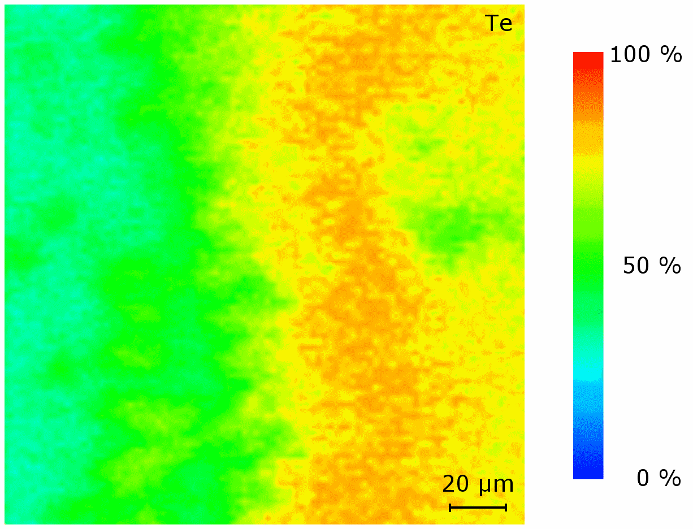

Sputtern und Annealen
35
werden durch das Pumpsystem aus dem System entfernt.
Durch den Sputterprozess werden die obersten Schichten des Targets abgetragen. Dabei
entsteht eine sehr raue Oberfläche. Für die Messungen muss diese daher wieder geglättet wer-
den. Dazu wird die Probe auf eine Temperatur nahe unter der Schmelztemperatur erwärmt.
Durch die Oberflächenspannung des Probenmaterials glättet sich die Oberfläche wieder. Dieser
Prozess wird Annealen (engl. für tempern, anlassen) genannt. Währenddessen erhöht sich der
Druck in der Vakuumkammer signifikant, da der partielle Dampfdruck aller Elemente mit der
Temperatur ansteigt. Das Restgas setzt sich allerdings fast ausschließlich aus den Elementen
der Probe zusammen, die mit der erwärmten Probenoberfläche in einem dynamischen Gleich-
gewicht steht. Durch die Oberflächenspannung des Probenmaterials glättet sich die Oberfläche
wieder. Die Kombination aus Sputtern und Annealen wird häufig bei der Untersuchung von
Metalloberflächen angewendet.
Die Kombination dieser beiden Methoden kann oftmals nicht angewendet werden, wenn
sich die Schmelztemperaturen der einzelnen Komponenten des zu untersuchenden Materials
stark voneinander unterscheiden. Im Falle von HgCdTe betragen die Unterschiede fast 500 Kel-
vin. Cadmium besitzt eine Schmelztemperatur von 594 K (321 ◦C) und Tellur von 723 K (450
◦C). Quecksilber hingegen geht bereits bei 234 K (-39 ◦C) in die flüssige Phase über. Die Siede-
temperatur von Quecksilber liegt bei 630 K (357 ◦C), noch unterhalb der Schmelztemperatur
von Tellur. Man sollte erwarten, dass das Quecksilber aufgrund seines hohen Dampfdruckes
aus einer erwärmten Probe herausdiffundiert [49]. Bei Raumtemperatur hingegen ist HgCdTe
stabil und behält seine Komposition bei. Die Schmelztemperatur für MCT1 liegt je nach Zu-
sammensetzung zwischen der von HgTe (670 ◦C) und CdTe (1090 ◦C, nach [46], Seite 56).
Abbildung 6.1: Mikrosondenanalyse einer erwärmten HgTe Oberfläche (rechte Bildhälfte) [50]. In der
jeweils linken Bildhälfte ist der Sputterkrater zu sehen, dort wird der Sollwert des Hg-Anteils gemessen.
In der linken Abbildung wurde die Oberfläche auf Tellur untersucht, rechts auf Quecksilber.
Eine experimentelle Untersuchung in unserer Arbeitsgruppe [50] zeigt, dass die Methode
des Annealens bei HgCdTe tatsächlich nicht angewendet werden kann. Es wurde die Oberflä-
che von HgTe untersucht. Die in dieser Diplomarbeit untersuchten Proben haben einen relativ
hohen Anteil Quecksilber, so dass sich die Ergebnisse von HgTe direkt übertragen lassen. Zu-
nächst wurde eine Probe von HgTe erhitzt. Dann wurde ein Teil der Oberfläche durch Sputtern
mit Argonionen gereinigt. Dadurch wurde eine Schicht von einigen Nanometern abgetragen
und somit eine durch das Annealen veränderte Oberfläche entfernt.
1Mercury Cadmium Telluride, übliche Abkürzung für HgCdTe in englischsprachiger Literatur
36
Präparation der (110) Oberfläche
Danach wurde die Oberfläche mit der Mikrosondenanalyse untersucht. Das Ergebnis ist
in Abbildung 6.1 zu sehen. Bei dieser Untersuchung erfolgte die Anregung mit 10 keV Rönt-
genstrahlen. Die Auflösung der Elektronenstrahlmikrosonde beträgt 2 µm, die Bilder haben
eine Kantenlänge von 180 µm. Die rechte Bildhälfte zeigt die erwärmte HgTe-Oberfläche. Es
ist deutlich zu sehen, dass die Probe fast kein Quecksilber mehr an der Oberfläche enthält. In
der linken Bildhälfte erkennt man den Sputterkrater. Dort messen wir wieder das erwartete
Verhältnis von Quecksilber zu Tellur.
Damit eignet sich die Methode des Sputterns und Annealens nicht, um die Oberfläche der
zu untersuchenden Proben von Hg1-XCdXTe für eine ARPES-Messung vorzubereiten. Das ist
in Übereinstimmung mit den Ergebnissen von Spicer et. al. [48], [51].
6.2
Spalten der Proben im Vakuum
Eine weitere Möglichkeit, eine saubere Oberfläche im Hochvakuum zu erzeugen, ist das Spal-
ten der Kristalle. Besonders Schichtkristalle sind für diese Methode der Oberflächenpräparati-
on geeignet. Da ihre Ebenen nur mit einer schwachen Van-der-Waals-Bindung zusammenge-
halten werden, ist die zur Spaltung benötigte Kraft sehr gering. Auf diese Weise werden zum
Beispiel die Oberflächen von Hochtemperatursupraleitern für Messungen im Vakuum vorbe-
reitet. Dazu genügt es, Tesafilm auf die Probe aufzukleben und diesen im Vakuum abzuziehen.
Die kovalenten Bindungen innerhalb der Ebenen sorgen für die nötige mechanische Stabilität
des Restkristalles. Man erhält sehr ebene Oberflächen von wenigen Angström Rauhigkeit (sie-
he [52], Seite 43). Neben der Photoelektronenspektroskopie benötigen auch Untersuchungen
mit dem Rastertunnelmikroskop oder STM2 saubere Oberflächen.
Bei Kristallen, die durch kovalente oder ionische Bindungen zusammengehalten werden,
gelingt das Spalten jedoch nicht so einfach. Es ist notwenig, eine spezielle Spaltvorrichtung zu
konstruieren (siehe [53], [54] und [55]). Dr. C. Jannowitz hat eine solche Spaltkammer zur Un-
tersuchung der elektronischen Struktur von CdTe konstruiert. Im Rahmen seiner Doktorarbeit
konstruierte auch N. Orlowski eine Spaltkammer, um die Oberflächen von HgTe für die Un-
tersuchung mittels PES vorzubereiten. Daher wurde erneut ein Spaltmechanismus konstruiert,
um die Proben von HgCdTe für die Photoemissionsmessung zu präparieren.
6.2.1
Konstruktion einer Spaltkammer
In Abbildung 6.2 sind die Spaltkammer von N. Orlowski und die neu aufgebaute Spaltkammer
zu sehen. Aus früheren Spaltversuchen war bekannt, dass nur gekühlte Spaltungen erfolgreich
sind. Eine Anforderung an die Spaltkammer war daher die Möglichkeit, die Probe vor der ei-
gentlichen Spaltung hinreichend zu kühlen. Der Ansatz ist in Bild (c) zu sehen. Im Zentrum ist
eine Adapterplatte zu erkennen, auf die ein Probenhalter geschraubt werden kann. Für einen
optimalen thermischen Kontakt ist die Oberfläche poliert. Diese Platte bildet den Abschluss ei-
nes Edelstahlrohres, das mit einem CF63-Flansch in einen Manipulator geschraubt ist und oben
eine Öffnung zum Einfüllen einer Kühlflüssigkeit bietet. Das Rohr wurde von der Werkstatt für
UHV-Umgebungen passend verschweißt.
Von links ragt ein Amboss in die Vakuumkammer hinein. Er ist auf einer schraubbaren Li-
neardurchführung befestigt. Ihm gegenüber ist der eigentliche Spaltkeil auf einer frei beweg-
2Scanning Tunnel Microscope


Spalten der Proben im Vakuum
37
Abbildung 6.2: Links die Spaltkammer von N. Orlowski [7], in der Mitte die im Rahmen dieser Diplom-
arbeit gebaute Spaltkammer. Rechts ein Blick in die Spaltkammer: Links ist der Amboss zu erkennen,
rechts der Spaltkeil und oben die Aufnahmeplatte für den Probenhalter.
lichen Lineardurchführung befestigt. Der Manipulator erlaubt eine exakte Positionierung der
Probe in x−, y− und z-Richtung. Am Probenhalter kann ein PT100 zur Temperaturmessung be-
festigt werden. Mit einer vergleichbaren Apparatur von N. Orlowski wurde bei Kühlung mit
flüssigem Stickstoff innerhalb weniger Minuten eine Temperatur von 80K erreicht. Der direkte
und großflächige Kontakt zwischen Kühlbehälter und Probenhalter bietet demnach deutliche
Vorteile gegenüber einer Kühlung in einem gewöhnlichen Manipulator. Bei letzterem erfolgt
der Wärmetransport vornehmlich über Kupferlitze. Der Kühlmittelbedarf ist ebenfalls bedeu-
tend höher [7].
6.2.2
Spaltmechanismus im Probenhalter
Es stellte sich heraus, dass die von Moskau zur Verfügung gestellten Proben nur sehr klein
waren. Insbesondere wiesen sie eine Dicke von weniger als einem Millimeter auf. Dieser Um-
stand stellt besondere Anforderungen an die genaue Positionierung der Proben im Spaltme-
chanismus. Während der Präparation zeigte sich, dass sie aufgrund ihrer geringen Größe me-
chanisch nicht sehr stabil sind. Das bedeutet, dass die zur Spaltung notwendige Kraft trotz der
kovalenten Bindungen recht gering ist.
Es wurde daher der Versuch unternommen, die Kristalle mit einer bei Schichtkristallen üb-
lichen Methode zu spalten. Dazu werden die Kristalle mit leitfähigem Silberkleber in einem
speziell vorbereiteten Stempel des Probenhalters geklebt. Dieser härtet bei 120 ◦C Wärmebe-
handlung innerhalb einer Stunde aus. Danach wird ein passender Spalthebel auf die Oberseite
der Probe geklebt. Zuvor wird eine Nut von 1 Millimeter Breite in den Aluminiumspalthebel
gesägt, um ihn während des Aushärtens besser auf der Probe zu positionieren. Darüber hin-
aus steht so eine größere Fläche für die Kraftübertragung beim eigentlichen Spaltprozess zur
Verfügung (siehe Abbildung 6.3).
Die so präparierten Proben wurden über das Probenkarussell in das Vakuumsystem trans-
feriert. Mit dem Wobbelstick konnten die Proben sehr einfach gespalten werden, während sie
sich im Kryostatmanipulator (Kapitel 4.1) befinden. Die benötigten Kräfte sind so gering, dass

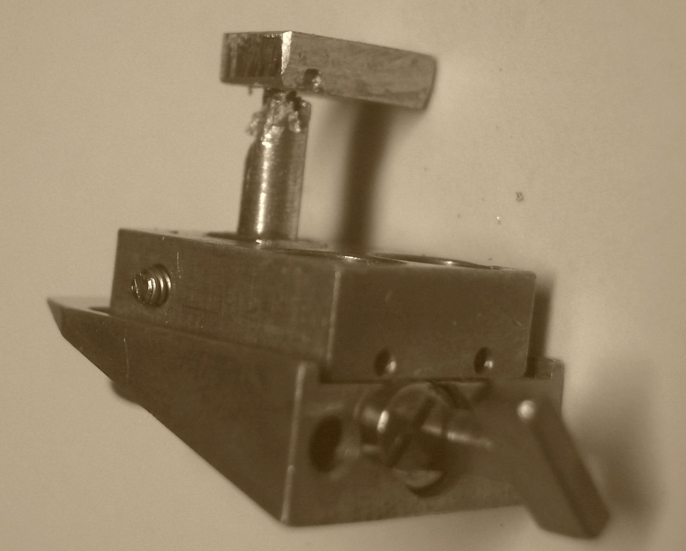
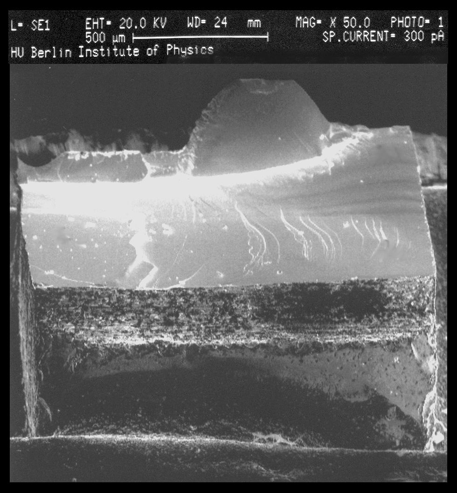
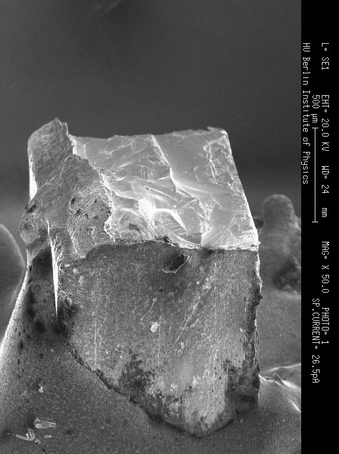

38
Präparation der (110) Oberfläche
einige Proben bereits beim Einbau gespalten wurden (siehe Anhang A). Daher wurden die
Spalthebel verkleinert, um die Kräfte auf die Proben durch die Massenträgheit des Hebels zu
minimieren.
Abbildung 6.3: Schematische Darstellung der Spaltmechanik direkt im Probenhalter.
Rechts ist ein Probenhalter mit Probe und Spaltkeil photographiert.
Allerdings spalteten die Kristalle an unvorhersagbaren Stellen und neigten zur Splitter-
bildung. Daher wurden die Kristalle an Hr. Sölle gegeben, der sie in kleinere Einzelkristalle
zersägte. Außerdem sägte er mit der Fadensäge einen 100 µm tiefen Graben in eine Seite der
Kristalle. Dies sollte als Sollbruchstelle dienen. Schematisch ist der finale Aufbau zum Spalten
der Probe in Abbildung 6.3 gezeigt. In der Praxis ließen sich die Kristalle erfolgreich entlang
dieser Sollbruchstelle teilen. Eine Aufnahme ist in Abbildung 6.4 links zu sehen.
Abbildung 6.4: Die linke Aufnahme mit einem Rasterelektronenmikroskop zeigt eine Spaltung entlang
der Sollbruchstelle. Diese ist als 100 µm tiefer Graben im Vordergrund zu erkennen. Das mittlere Bild
zeigt die fragmentierte Oberfläche nach einer Spaltung im Vakuum. Rechts ist die Photographie eines
bei der Spaltung zersplitterten Kristalls zu erkennen.
6.3
Aufnahmen der Spaltungen mit dem Rasterelektronenmikroskop
Die weiteren Messungen mit dem Rasterelektronenmikroskop oder SEM3 an den gespaltenen
Proben legen deutlich offen, dass die Proben keinesfalls einkristallinen Charakter besitzen. Dies
wurde schon durch die Laue-Transmissionsaufnahme (Abbildung 5.5) gezeigt. Makroskopisch
weisen die Proben eine einheitliche Orientierung auf, sind aber in jedem Fall polykristallin.
Darauf weisen auch die beiden Aufnahmen des Elektronenmikroskopes in Abbildung 6.5 hin.
3Scanning Electron Microscope

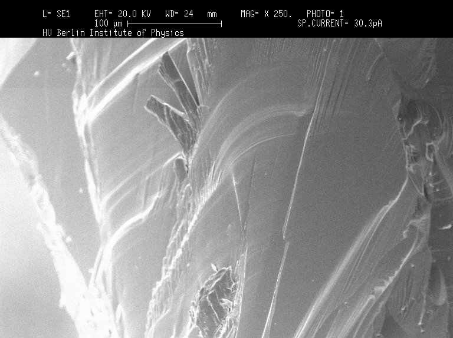
Prüfung der Oberflächenqualität durch die Beugung langsamer Elektronen
39
Die linke Aufnahme zeigt das gespaltete Kristall im Probenhalter. Für das rechte Bild wurde
ein Ausschnitt um den Faktor 10 vergrößert.
Abbildung 6.5: Elektronenmikroskopaufnahme einer gekühlten Spaltung einer HgCdTe-Probe. Deutlich
sind Stufen von einigen µm Höhe zu erkennen. Das Kristall zeigt innere Spannungen. Der Maßstab der
Aufnahme beträgt links 1 mm, rechts 100 µm.
Schon bei der Auflösung des Elektronenmikroskopes wird eine uneinheitliche Oberflächen-
struktur sichtbar. Man kann nicht von einer homogenen Spaltung entlang einer (110)-Ebene
sprechen. Vielmehr sind Stufen von einigen Mikrometern Höhe erkennbar sowie innere Span-
nungen des Kristalls. Diese Spannungen haben den Verlauf der Spaltung entscheidend be-
stimmt. Bei der Interpretation winkelaufgelöster Messungen von Photoelektronenspektren be-
nötigt man natürlich eine Referenzebene. Offensichtlich ist diese nur bedingt gegeben, man
sollte in den Spektren Anteile unterschiedlicher Oberflächenorientierungen erwarten. Neben
Effekten der Oberflächen-Relaxation werden zusätzliche Anregungen von weiteren Oberflä-
chenzuständen zu sehen sein.
Die Anforderungen an die Oberflächenqualität für eine Photoemissionsmessung gehen über
den Mikrometerbereich weit hinaus. Es sind gute Eigenschaften auf atomarer Ebene erforder-
lich. Diese werden mit der nächsten Methode überprüft.
6.4
Prüfung der Oberflächenqualität durch die Beugung langsamer
Elektronen
Eine übliche Methode, periodische Strukturen (z. B. Kristalloberflächen) auf atomarem Niveau
zu untersuchen, ist die sogenannte Beugung langsamer Elektronen oder LEED4. Die wenig
verheißungsvollen Ergebnisse des Elektronenmikroskopes bestätigten sich auch bei der Unter-
suchung mittels LEED. Mehrere Oberflächen wurden im Vakuum präpariert, indem sie unter
normalen Bedingungen gespalten wurden. Mit diesen Probenoberflächen war es nicht möglich,
ein Beugungsbild auf dem Phosphorschirm zu erhalten.
Aus der Untersuchung ähnlicher Kristalle [7] war bekannt, dass eine gekühlte Spaltung
weitaus bessere Ergebnisse liefern kann. So wurde eine Probe im Kryostat-Manipulator der
AR65 auf 100 K (-170 ◦C) gekühlt und mit dem Wobbelstick gespalten. Danach war es erstmals
4Low Energy Electron Diffraction
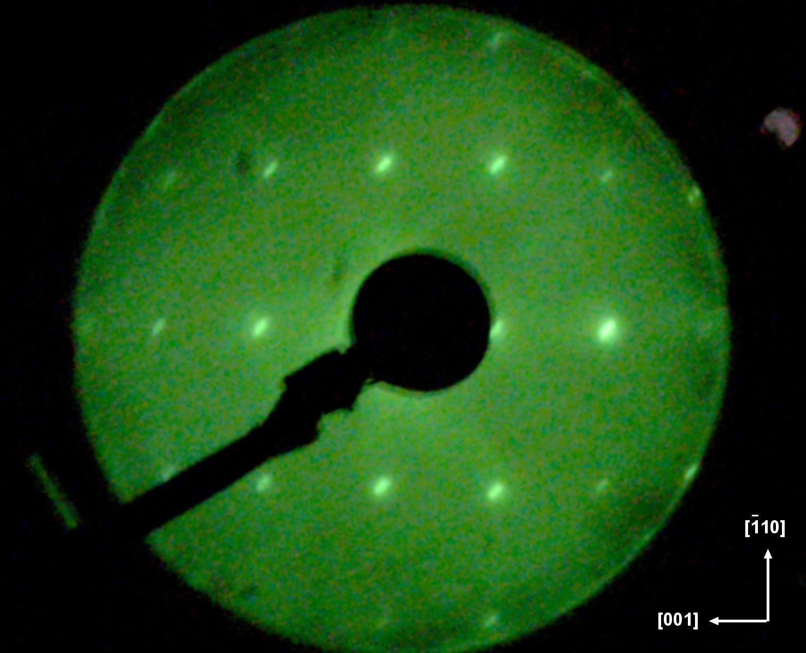
40
Präparation der (110) Oberfläche
möglich, das typische Beugungsmuster einer LEED-Aufnahme zu erkennen. Bei einer Anre-
gungsenergie von 156 eV entstand das Bild, welches in Abbildung 6.6 gezeigt ist.
Abbildung 6.6: Erstes erfolgreiches LEED-Beugungsbild
nach einer gekühlten Spaltung bei 100 Kelvin. Die Elek-
tronenenergie beträgt 156 eV.
Aus dem Beugungsbild kann man die Periodizität des Oberflächengitters berechnen. Für
die Berechnung benötigt man außerdem die Geometrie der Apparatur sowie die Elektronen-
energie. Es sind zwei unterschiedliche Gitterkonstanten zu erkennen, obwohl für HgCdTe stets
nur eine Gitterkonstante angegeben wird. Das liegt daran, dass eine (110)-Oberfläche unter-
sucht wurde. Da diese Ebene nicht parallel zu Flächen des Basisgitters verläuft, sondern dia-
√
gonal durch diese, ist eine Gitterkonstante um den Faktor
2 verkürzt. Die Relationen der
Oberflächenperiodizität zur Gitterkonstante betragen:
1
1
b1 =
a
b2 = √ a
2
8
Mit der bekannten Anregungsenergie von 156 eV und der Geometrie der LEED-Apparatur
können die zugehörigen Längenwerte für b1 und b2 aus Abbildung 6.6 berechnet werden:
b1 = (3, 5 ± 0, 2)Å
b2 = (2, 4 ± 0, 2)Å
Aus den Werten b1 und b2 ergibt sich eine Gitterkonstante von 7,0 Å bzw. 6,8 Å. Der Sollwert
für diese Probe (x=0,2) beträgt a = 6, 464 Å. Die Ergebnisse der Beugung langsamer Elektronen
weichen somit um 10 % von den realen Werten ab. Bei der Berechnung hat die Geometrie bzw.
deren exakte Einhaltung einen großen Einfluss auf das Endergebnis. In unserem Experiment
genügt bereits eine Abweichung der Probenposition um 7 mm vom Zentrum des Phosphor-
schirmes für einen relativen Fehler von 10 % [23].
In Abbildung 6.6 ist zu erkennen, dass die Beugungsreflexe nicht exakt auf einer Linie lie-
gen. Offensichtlich befindet sich die Probe also nicht an der Referenzposition. Mit dem Ma-
nipulator der AR65 kann die Probe sehr genau relativ positioniert werden, über die absolute
Positionierung kann jedoch keine Aussage gemacht werden. Eine weitere Ungenauigkeit liegt
in der Höhe des Probenstempels sowie der Position des Kristalls in diesem.
Kapitel 7
Ergebnisse der Photoemission
7.1
Energie der gemessenen Zustände
In typischen Photoemissionsexperimenten bestimmt ein Analysator die Intensitäten der emit-
tierten Elektronen bei verschiedenen Energien. Ein angeregter Zustand des Festkörpers er-
scheint in diesen Spektren bei einer definierten kinetischen Energie. Der absolute Wert der
gemessenen kinetischen Energie für diesen Zustand ist allerdings von der Anregungsenergie
der Photonen abhängig (siehe Abbildung 3.2). In der Praxis werden daher diese Energien re-
lativ zu einem gemeinsamen Bezugspunkt angegeben, um Spektren und Energiewerte leichter
miteinander vergleichen zu können. Damit befinden sich gleiche Zustände in unterschiedli-
chen Messungen bei unterschiedlichen Photonenenergien bei der gleichen relativen Energie.
In den üblichen Arbeiten zur Photoemission finden insbesondere zwei Referenzpunkte Ver-
wendung. In vielen Fällen werden die kinetischen Energien auf die Fermi-Energie bezogen. Bei
Halbleitern ist es auch üblich, sich auf das Valenzbandmaximum (VBM) zu beziehen.
Es ist mit einigen Besonderheiten verbunden diese Bezugspunkte zu bestimmen. Der Ener-
gieanalysator ist innen mit Graphit beschichtet (siehe Seite 13). Normalerweise würde man er-
warten, die Fermi-Kante stets bei exakt derselben Energie im Abstand von der Photoenenergie
zu messen. Ausgehend von der einfachen Beziehung (3.1) erwartet man daher:
EF = hν − ΦGraphit = hν − 4, 14 eV
In der Realität stimmt diese Gleichung jedoch nicht mit den Messergebnissen überein. Die
Spannungsversorgungen der Elektronenlinsen und des Halbkugelanalysators besitzen eine
Spannungsstabilität von wenigen µV. Dennoch sind die gemessenen Energiewerte von den
Umgebungsbedingungen abhängig. Diese driften im Verlauf von Tagen um einige Millivolt.
Daher wird bei hochauflösenden Messungen, wie sie bei Hochtemperatursupraleitern durch-
geführt werden, jedes Mal vor oder nach der Messung die exakte Position der Fermi-Energie
bestimmt.
Diese Kalibrierung sollte auch bei weniger genauen Messungen regelmäßig durchgeführt
werden. Unbedingt erforderlich ist eine solche Messung, wenn die Anlage abgebaut und an
anderer Stelle (z. B. am Synchrotron) wieder aufgebaut wird. So wurde im Frühjahr 2007 mit
der Heliumlampe (hν = 21, 22 eV) eine Fermi-Energie von EF = (17, 085±0, 004) eV bestimmt.
Daraus ergibt sich eine gemessene Austrittsarbeit Φ = (4, 135 ± 0, 005) eV. Die Messungen im
41

42
Ergebnisse der Photoemission
August 2007 bei BESSY ergaben jedoch eine Austrittsarbeit von Φ = (4, 180 ± 0, 005) eV. Diese
Angaben beziehen sich auf eine Passenergie von 10 eV. Für eine Passenergie von 5 eV verschiebt
sich die Fermi-Kante um weitere 130 meV (Messung Januar 2007).
Ein großer Vorteil der Messung an der Beamline eines Synchrotrons ist die einstellbare Pho-
tonenenergie. Aus dem kontinuierlichen Spektrum der Synchrotronstrahlung wird mittels ei-
nes Gittermonochromators die gewünschte Wellenlänge ausgewählt. Die relativen Energiepo-
sitionen des Monochromators werden reproduzierbar mit einer Genauigkeit von 5 meV an-
gefahren [56]. Für die BUS-XUV-Beamline wurde diese Angabe im Jahre 2007 nochmals über-
prüft. Allerdings bezieht sich diese Genauigkeit nicht auf die absoluten Energiewerte. So wur-
de im Januar 2007 mit der AR65 eine Austrittsarbeit von Φ = (3, 92 ± 0, 03) eV bestimmt. Dieser
Wert unterscheidet sich um 260 meV von dem Ergebnis im August desselben Jahres.
Abbildung 7.1: Gemessene Austrittsarbeit der AR65 in Abhängigkeit
von der Anregungsenergie. Sie wurde durch die Lage der Fermi-Kante
von polykristallinem Gold bei verschiedenen Anregungsenergien im
Januar 2007 bei BESSY gemessen. Mittelwert: Φ = (3, 92 ± 0, 03) eV.
Die gemessene Fermi-Energie ist außerdem sehr stark von der Photonenenergie abhängig
(siehe Abbildung 7.1), einzelne Werte weichen um 100 meV ab. Für die Auswertung der Spek-
tren haben wir daher den Wert verwendet, der bei der jeweiligen Photonenenergie empirisch
bestimmt worden war.
Eine Vielzahl von Arbeiten bezieht ihre Energieangaben auf das Valenzbandmaximum. Bei
Halbleitern tritt dieses Maximum jedoch nur am Γ-Punkt auf. Um diesen Energiewert bestim-
men zu können, muss die exakte Position des Γ-Punktes bekannt sein. Außerdem muss es mög-
lich sein, diesen Punkt mit der Messung zu erreichen. Diese Bedingung schließt sowohl den
richtigen Winkel relativ zur Oberfläche als auch die passende Anregungsenergie ein. Durch die
Dispersion der Energiebänder liegen die Maxima von anderen Punkten der Brillouin-Zone bei
niedrigeren Energien. (siehe Abbildung 7.14). Dieser Abstand kann mehr als ein Elektronen-
volt betragen. Bei Materialien mit einer geringen effektiven Masse der Löcher ist die Position
des Γ-Punktes sehr scharf begrenzt.
Bei den Messungen an HgCdTe ist es nur sehr selten gelungen, eine klar definierte Kan-
te als Maximum des Valenzbandes zu messen. Als Beispiel diene die Messung vom 16. 7.
2007 in Abbildung 7.2 an Probe I (x=0,07). Es ist die erste Messung mit der neuen Stickstoff-


Energie der gemessenen Zustände
43
Nachfüllanlage. Daher war das Spektrum mit unzähligen „Spikes“ von den Schaltvorgängen
des Magnetventils übersät. Der typische inelastische Untergrund hingegen trat vergleichswei-
se schwach in Erscheinung. Die sichtbare Kante liegt bei einer Energie von -0,23 eV relativ zur
Fermi-Energie. Mit der Anpassung an eine Gaussfunktion lässt sich dem Valenzbandmaxium
ein Zustand bei -0,44 eV zuordnen.
Abbildung 7.2: Aus diesem Spektrum wurden nur die Spikes entfernt.
Deutlich ist ein Valenzbandmaximum erkennbar. Die Anregung erfolg-
te mit der He-Lampe. Es wurde Probe I (x=0,07) untersucht.
Bei den meisten anderen Messungen war es nicht möglich, einen Energiewert für das Va-
lenzbandmaximum zu bestimmen. Zwar war es möglich, eine gut sichtbare Dispersion der Vo-
lumenzustände zu detektieren. Das trifft zum Beispiel auf die k⊥-Messung an Probe I (x=0,07)
zu, die in Abbildung 7.14 gezeigt ist. Aufgrund der Dispersion lässt sich der Γ-Punkt der Ener-
gie von 115 eV zuordnen, der X-Punkt liegt bei 65 eV. Doch im Gegensatz zu Abbildung 7.2
kann am Γ-Punkt kein klares Maximum ausgemacht werden. Einen Ausschnitt des Spektrums
an diesem Messpunkt zeigt Abbildung 7.3.
Abbildung 7.3: Valenzband HgCdTe: Intensität der Photo-
emission beim Γ-Punkt (Anregungsenergie 115 eV).
Wie deutlich erkennbar ist, nimmt die Zustandsdichte oberhalb von 0,9 eV Bindungsenergie
stetig ab, um bei der Fermi-Energie (hier als 0 definiert) ihr Minimum zu erreichen. Im weiteren
44
Ergebnisse der Photoemission
ist daher bei allen Auswertungen von Spektren die zuvor bestimmte Energie der Fermi-Kante
als Referenzwert („Null“) angesetzt.
Aus anderen Arbeiten geht hervor, dass auch dort die Relativierung der kinetischen Energi-
en über die Fermi-Energie erfolgt. Zuvor wurde die Energie des Valenzbandmaximums (VBM)
relativ zu dieser Energie bestimmt. Dieser Abstand entspricht einer konstanten Energie, die
der Fermi-Energie abgezogen werden kann. In der Auswertung der Spektren wird dann das
VBM als Nullpunkt gesetzt. Der Nullpunkt kann damit durchaus ein Elektronenvolt unterhalb
der Fermi-Energie liegen. Somit könnten auch Zustände mit positiver Bindungsenergie auf-
tauchen ([7], Seite 46). Das ist aber kein Widerspruch, die Energie liegt noch deutlich unterhalb
der Fermi-Energie. Es handelt sich um Zustände in der Energielücke, die zum Beispiel von
Oberflächenzuständen (siehe Seite 6) hervorgerufen werden.
7.2
Allgemeine Charakteristika
Bei unseren Messungen an der BUS-XUV-Beamline bei BESSY standen uns Photonenenergi-
en bis zu 125 eV zur Verfügung (Gitter 1 - 500 Linien). Mit dieser Anregungsenergie haben
wir Probe IV (x=0,183) bestrahlt. Die emittierten Elektronen besitzen ein für HgCdTe typisches
Spektrum, wie es in Abbildung 7.4 gezeigt wird. Auf die einzelnen Bestandteile möchten wir
zunächst kurz eingehen.
In diesem Übersichtsspektrum erkennt man zunächst die Spin-Bahn-aufgespaltenen Kern-
niveaus des Tellur bei ca. 40 eV Bindungsenergie. Das Te4d5/2-Level liegt bei 40,1 eV, während
das Te4d3/2-Level um 1,5 eV abgespalten bei 41,6 eV liegt. Der Unterschied in den Intensitäten
entspricht der Besetzung der jeweiligen Orbitale mit 10 bzw. 6 Elektronen. Dieser Energiebe-
reich ist noch einmal extra in Abbildung 7.5 gezeigt.
Sehr nahe am Valenzband befinden sich weitere Kernniveaus des Quecksilber und Cad-
mium. In den untersuchten Proben dominierte der Quecksilberanteil. Die 5d-Level sind eben-
falls Spin-Bahn aufgespalten und befinden sich bei den Energien E(Hg5d5/2) = 8,27 eV bzw.
E(Hg5d3/2) = 10,08 eV. Auch hier ergeben sich die relativen Intensitäten aus der Besetzung der
Orbitale. Mit steigendem Cadmium-Anteil sind auch die Cd4d-Level im Spektrum sichtbar.
Ihre Energien betragen E(Cd4d5/2) = 10,92 eV bzw. E(Cd4d3/2) = 11,49 eV.
Das Photoemissionsspektrum bis zu 13 eV Bindungsenergie ist in Abbildung 7.6 genauer
dargestellt. Diese Messung erfolgte an Probe V (x=0,1955). Im Energiebereich von 4 bis 6,5 eV
überlagern sich s-artige [48] Valenzelektronen vom Quecksilber und Cadmium. Der Zustand
des Cadmium besitzt eine Energie von 5,17 eV und das Quecksilber-Level 5,95 eV. Die Lage so-
wie der Abstand von 780 meV stimmen mit den Ergebnissen von Silberman et. al. [53] überein.
Anzumerken ist, dass sich diese Arbeit auf das VBM bezog und daher Energiewerte erhält, die
0,5 eV geringer sind.
Im Bereich zwischen 4 eV Bindungsenergie und der Fermi-Energie liegen p-artige Zustände
[48], [57], die eine starke Dispersion aufweisen (siehe Abbildung 7.14). Die Messung in norma-
ler Emission wird sich hauptsächlich auf diesen Bereich konzentrieren.

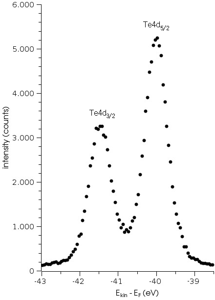

Allgemeine Charakteristika
45
Abbildung 7.4: Übersichtsspektrum einer Probe HgCdTe mit 125 eV Anregungsenergie bei BESSY.
Abbildung
7.5:
Durch
Spin-Bahn-
Kopplung
aufgespaltene
4d-Kern-
Abbildung 7.6: Valenzbandspektrum von Probe V (x=0,1955)
niveaus des Tellur.
mit den Kernniveaus von Quecksilber und Cadmium.

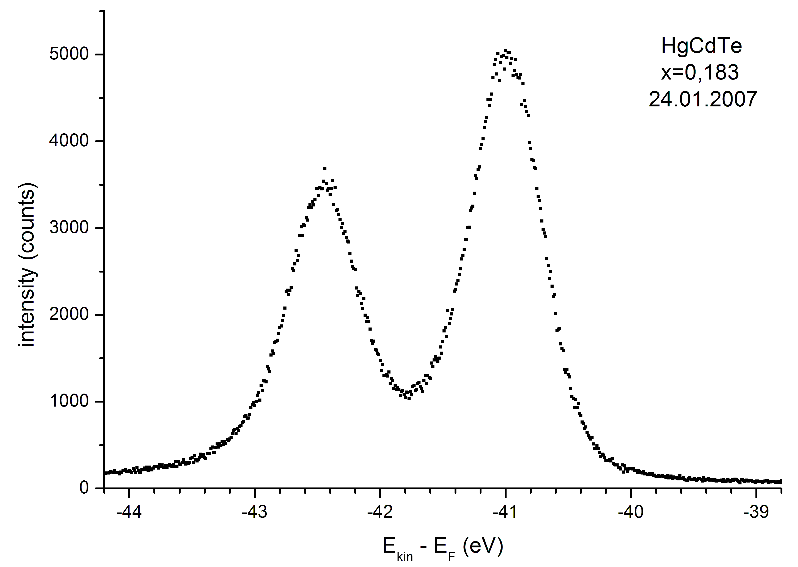
46
Ergebnisse der Photoemission
7.3
Energie der Kernniveaus
7.3.1
Tellur 4d
Kernniveaus zeichnen sich durch eine hohe Zustandsdichte aus, daher sind die gemessenen
Elektronenintensitäten bei diesen Energien besonders hoch. Das Tellur-4d-Niveau bei 40 eV
Bindungsenergie ist ein solcher charakteristischer Zustand. Während der Messungen am Syn-
chrotron war dieses Niveau gut geeignet, eine optimale Position der zu untersuchenden Probe
in der Messapparatur zu finden.
Abbildung
7.7:
Doppelstruktur
des
Te4d-
Abbildung 7.8: Spin-Bahn-aufgespaltenes Kern-
Kernniveaus bei einer Messung von Probe I
niveau Te4d von Probe IV (x=0,183) in ungestör-
(x=0,07). Offensichtlich liegt eine veränderte
ter Umgebung. Die Energie der Aufspaltung be-
chemische Umgebung vor.
trägt (1,46±0,01) eV.
Neben der Positionierung eignen sich die Te4d-Kernniveaus auch, um die chemische Um-
gebung zu überprüfen. Bei einer Messung (Abbildung 7.7) zeigten sich eine Überlagerung von
zwei Spin-Bahn-aufgespaltenen Kernniveaus mit einer Energiedifferenz von ∆=(0,53±0,02) eV.
Dieser sogenannte „chemical shift“ deutet auf eine veränderte chemische Umgebung hin [58].
Die untersuchte Probe weist also keine idealen Eigenschaften auf. In manchen Fällen ist eine
solche Verdopplung ein Hinweis auf eine Gitteränderung (z. B. β-MoTe2).
7.3.2
Quecksilber 5d und Cadmium 4d
Bereits in früheren Photoemissionsmessungen von Shih et. al. wird von einer Verschiebung der
Kernniveaus Hg5d und Cd4d in Abhängigkeit von der Zusammensetzungs beobachtet [54].
Auch unsere Messungen zeigen unterschiedliche energetische Lagen der Kernniveaus in den
verschiedenen Proben. Einige Messwerte sind in Tabelle 7.1 zusammengetragen.
X
Hg5d5/2
Hg5d3/2
Cd4d5/2
Cd4d3/2
0,40
8,35
10,15
10,68
11,37
0,18
8,30
10,09
10,69
11,38
0,07
8,28
10,04
10,66
0,06
8,05
9,87
Tabelle 7.1: Lage der Kernniveaus von Cadmium (Cd4d) und Quecksilber (Hg5d) in Abhängigkeit von
der Komposition. Der absolute Fehler beträgt 10 meV.
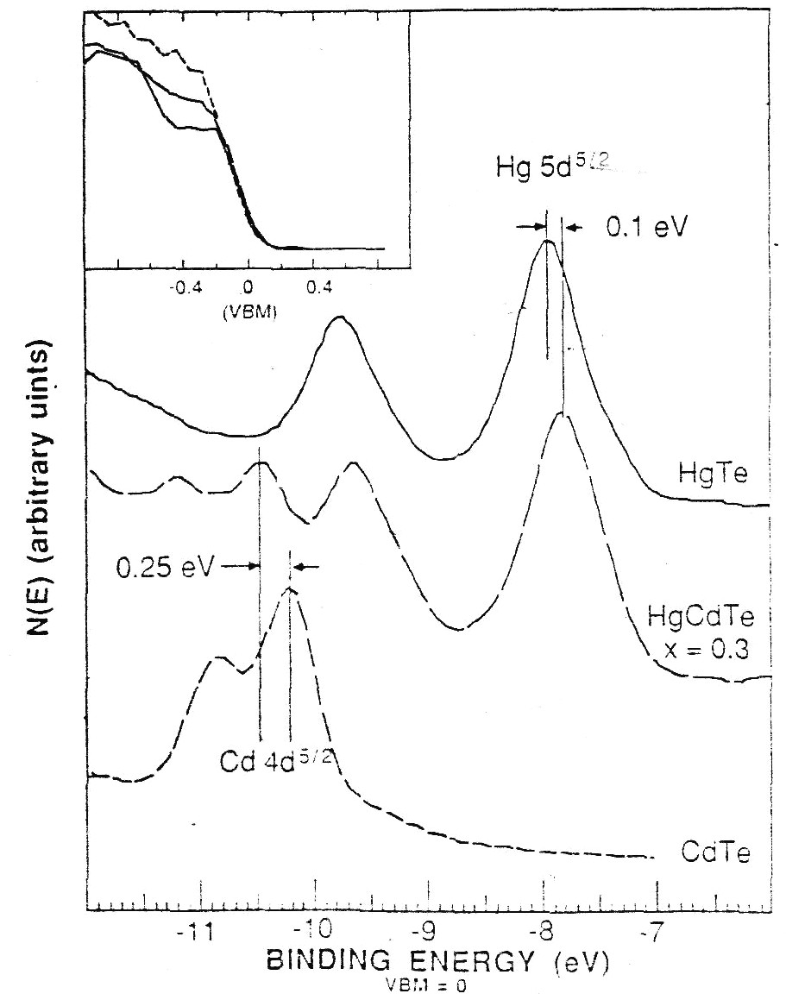
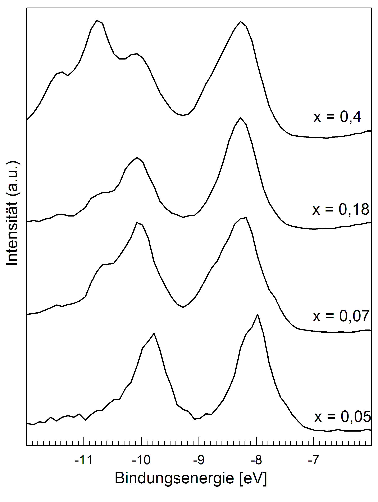
Energie der Kernniveaus
47
In unseren Messungen beobachten wir mit steigendem Cd-Anteil eine Verschiebung des
Hg5d-Niveaus um 300 meV zu größeren Bindungsenergien . Allerdings bezieht sich die Mes-
sung von Shih auf das VBM (siehe linke Ecke in Abbildung 7.9), während wir die Fermi-Energie
als Referenz verwenden. Der Unterschied könnte darin begründet liegen.
Abbildung 7.9: Die Hg5d und Cd4d Kernnive-
Abbildung 7.10: Die Hg5d und Cd4d Kernnive-
aus für HgTe, Hg0.7Cd0.3Te und CdTe, bezogen
aus für Hg1-xCdxTe (Werte für x zwischen 0,05
auf das VBM. Das Hg 5d Level verschiebt sich
und 0,4) bezogen auf die Fermie-Energie. Das
um 0.1 eV zu kleineren Bindungsenergien und
Hg 5d Level verschiebt sich um 0.3 eV zu größe-
das Cd 4d Level um 0.25 eV zu höheren Bin-
ren Bindungsenergien, Cd 4d Level um 0.12 eV
dungsenergien in ternären Mischungen [54].
ebenfalls zu höheren Bindungsenergien.
Spin-Bahn-Aufspaltung
Aus mehreren Messungen haben wir die Spin-Bahn-Aufspaltung der erwähnten Kernniveaus
bestimmt. Sie entsprechen den Ergebnissen von Silberman et. al. [53].
Tellur 4d
Cadmium 4d
Quecksilber 5d
(1,47±0,02) eV
(0,65±0,05) eV
(1,79±0,08) eV
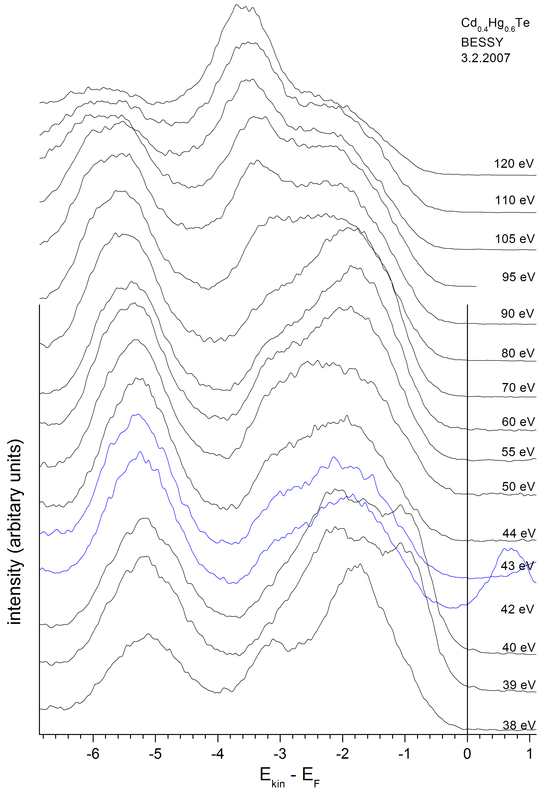

48
Ergebnisse der Photoemission
7.4
Das Valenzband - Messung in normaler Emission
Die Photoelektronenspektroskopie in senkrechter Richtung zur Kristalloberfläche wird als Mes-
sung in normaler Emission oder k⊥-Messung bezeichnet. Die Parallelkomponente des Wellen-
vektors ist daher null (siehe Formel (3.8)). Im Rahmen dieser Diplomarbeit wurden vier solcher
Messungen an unterschiedlichen Proben durchgeführt.
Abbildung 7.11: Erste Messung in normaler
Abbildung 7.12: Valenzbandspektrum von Probe
Emission. Es wurde Probe II (x=0,4) untersucht.
V (x=0,1955) in normaler Emission nach gekühl-
Die Spaltung erfolgte bei Raumtemperatur.
ter Spaltung.
Unsere erste Messung erfolgte mit Probe II (x=0,4). Das Ergebnis der ungekühlten Spal-
tung ist in Abbildung 7.11 zu sehen. Bei einer Anregungsenergie von 42 und 43 eV erschei-
nen Intensitäten oberhalb der Fermi-Energie. Dabei handelt es sich um Anregungen der Te4d-
Kernniveaus durch die zweite Beugungsordnung des Gittermonochromators. Die kinetische
Energie dieser Kernanregungen entspricht den kinetischen Energien der Valenzelektronen, die
durch die erste Beugungsordnung des Gitters angeregt werden. Störende zusätzliche Intensi-
täten treten auch noch bei niedrigeren Energien auf.
Auf die Schwierigkeiten der Oberflächenpräparation geht bereits Kapitel 6 ein. Da die Pro-
be bei Raumtemperatur gespalten wurde, ist mit einer uneinheitlichen Oberfläche zu rechnen.
Die Photoemissionsmessung bestätigt dies, denn es sind keine scharfen Intensitätsmaxima zu
erkennen. Vielmehr scheint es sich um eine Überlagerung vieler Zustände zu handeln. Das
Spektrum verliert damit seine Richtungsinformation und summiert unterschiedliche Wellen-
vektorwerte aufgrund der Oberflächenstruktur auf. Das Valenzband enthält im Bereich von 0
bis 4 eV keine auswertbare Dispersion.
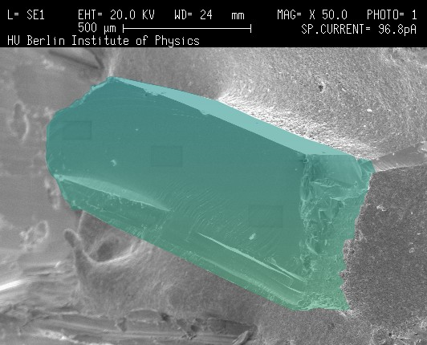
Das Valenzband - Messung in normaler Emission
49
Im Spektrum ist ein Band zwischen 4 und 6 eV Bindungsenergie sichtbar. Wir können es
s-artigen Zuständen der Kationen zuordnen [48], [11]. Dieses Band zeigt keine erkennbare Di-
spersion, nur eine geringe Intensitätsmodulation ist zu sehen. In theoretischen Bandstruktur-
rechnungen (siehe Abbildung 7.18 und 7.19) finden sich in diesem Energiebereich die Spin-
Bahn-abgespaltenen Lochbänder für die X, W und L-Punkte der Brillouinzone. Zum Γ-Punkt
hin weisen sie eine sehr starke Dispersion auf. Aufgrund der daraus folgenden geringen Zu-
standsdichte sind diese nur sehr schwer aufzulösen.
Da die Zustände im Energiebereich von 4
bis 6 eV offensichtlich keine Dispersion zeigen
(oder diese noch nicht aufgelöst werden kann),
haben wir uns im Folgenden entschlossen, nur
den Energiebereich von der Fermi-Energie bis
zu 4 eV Bindungsenergie zu untersuchen.
Eine zweite Messung in normaler Emissi-
on erfolgte nach nunmehr gekühlter Spaltung
an Probe V (x=0,1955). Das Ergebnis zeigt Ab-
bildung 7.12. In diesem Spektrum ist deutlich
ein Zustand bei 2 eV Bindungsenergie zu er-
kennen. Aufgrund seiner fehlenden Dispersion
können wir davon ausgehen, dass es sich um
einen Oberflächenzustand handelt (siehe Kapi- Abbildung 7.13: Bild der gelungenen Spaltung
tel 2.3 auf Seite 6). Ein weiterer dispersionsloser von Probe I. Die k⊥-Messung an dieser Proben-
Zustand findet sich bei ca. 3,4 eV in allen Spek- oberfläche findet sich in Abbildung 7.14.
tren in normaler Emission. Bei seiner Untersu-
chung von HgTe stellte N. Orlowski [7] einen
solchen Zustand bei 3,8 eV fest.
Da der Oberflächenzustand die Messung überdeckt, kann das Spektrum nicht weiter aus-
gewertet werden. Die beiden nachfolgenden Spaltungen und Messungen waren hingegen er-
folgreich. Zunächst wurde Probe IV (x=0,183) gekühlt gespalten. Die Dispersion der Zustände
ist in Abbildung 7.15 zu sehen. Man erkennt zum Beispiel ein Maximum des Valenzbandes bei
einer Energie von 115 eV. Auch die Dispersion weist auf einen hochsymetrischen Punkt hin.
In Verbindung mit der folgenden Auswertung kann dieser Energie dem Γ-Punkt zugeordnet
werden.
Die letzte Messung erfolgte an Probe I (x=0,07). Die gekühlte Spaltung war erfolgreich, wie
die Aufnahme mit dem Rasterelektronenmikroskop in Abbildung 7.13 erkennen lässt. In die-
sem Fall wählten wir Anregungsenergien bis zu 125 eV, obwohl die Intensität an dieser Stelle
durch die Beamline bereits stark eingeschränkt ist. Aufgrund von Symmetriebedingungen ist
es klar, dass sich der Γ-Punkt bei 115 - 120 eV befindet. Ein weiteres lokales Maximum findet
sich bei 65 eV. Diese Energie entspricht dem X-Punkt.
Insgesamt konnten die Messungen den hohen Erwartungen nicht gerecht werden. Vergli-
chen mit den Ergebnissen von N. Orlowski [34] an HgTe [59] und C. Janowitz an CdTe [63] fällt
sofort die geringe erreichte Auflösung an der Valenzbandkante auf. Bedingt durch die geringe
Anzahl Proben und die eingeschränkten Möglichkeiten zur Messung kann auch die Auswer-
tung (Abschnitt 7.6) nur begrenzt stattfinden.

50
Ergebnisse der Photoemission
Abbildung 7.14: Messung in k⊥ an Probe I (x=0.07). Deutlich ist die Dispersion des VBM zu erkennen
mit symmetrischen Punkten bei 120 und 65 eV Anregungsenergie. Durch Anpassung können diese
dem Γ-Punkt bzw. X-Punkt zugeordnet werden.
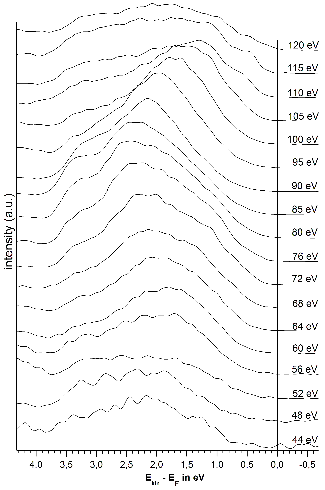
Das Valenzband - Messung in normaler Emission
51
Abbildung 7.15: Messung in k⊥ an Probe I (x=0.16). Das Valenzbandmaximum bei 115 eV Anre-
gungsenergie kann dem Γ-Punkt zugeordnet werden. Die Dispersion bestätigt diese Zuordnung.
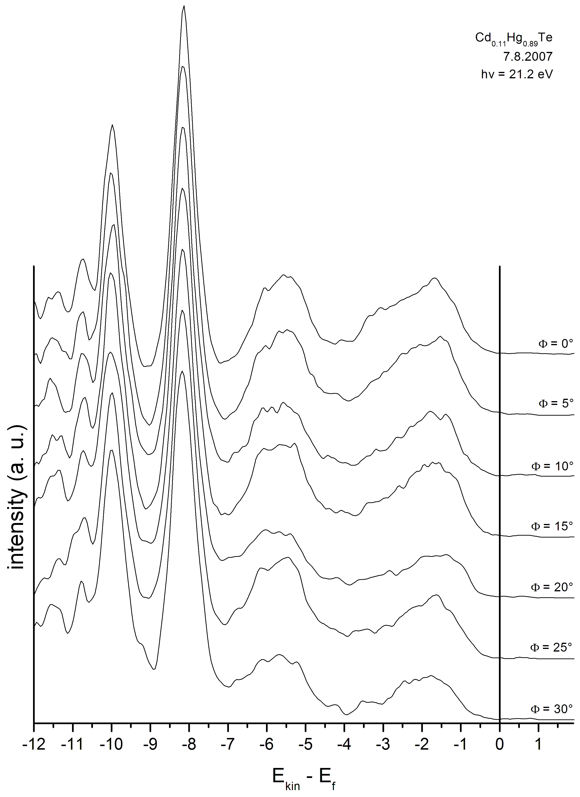
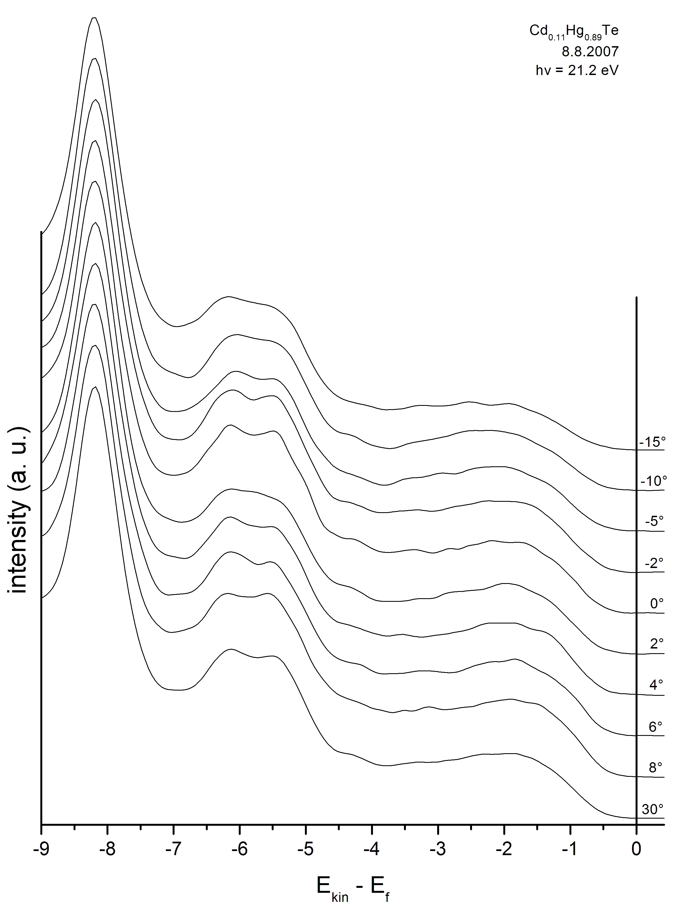
52
Ergebnisse der Photoemission
7.5
Winkelaufgelöste Photoemissionsmessungen
Die Photoemissionsanlage AR65 wurde gebaut, um winkelaufgelöste Messungen in hoher Auf-
lösung zu ermöglichen. Daher wurde auch mit HgCdTe versucht, winkelabhängige Spektren
der Photoelektronen zu messen. Die ersten Ergebnisse zeigen die folgenden Abbildungen.
Abbildung 7.16: Winkelabhängige Messung des
Abbildung 7.17: Messung der Winkelabhängig-
Valenzbandes und von Kernniveaus. Es zeigt
keit in größerer Genauigkeit und über einen wei-
sich keine Dispersion.
teren Winkelbereich.
Der Energiebereich von der Fermi-Energie bis zu 12 eV Bindungsenergie deckt die Kernni-
veaus von Quecksilber und Cadmium ab. Das in Abbildung 7.16 gezeigte Ergebnis der winkel-
aufgelösten Messung zeigt erwartungsgemäß keine Dispersion für die Kerniveaus. Auch das
s-artige Band von 4 bis 6,5 eV zeigt keine Abhängigkeit vom Wellenvektor. Für das Valenz-
band ist eine leichte Dispersion zu erkennen. Allerdings reicht die Auflösung nicht aus, um
eine Auswertung durchzuführen.
Eine weitere Messung wurde über einen Winkelbereich von -15◦ < φ < 30◦ durchgeführt.
Dabei wurden nur Energien bis 9 eV untersucht, um insbesondere das Verhalten der Valenz-
elektronen zu untersuchen. Jedoch ist keine Dispersion erkennbar. Wahrscheinlich sind durch
eine schlechte Oberflächenqualität sämtliche Richtungsinformationen verlorengegangen und
ergeben somit eine winkelintegrierte Intensität.
Auch weitere winkelaufgelöste Messungen waren nicht erfolgreich. Selbst nach gekühlter
Spaltung konnten keine besseren Ergebnisse als die gezeigten erzielt werden. Eine Messung
an der Ausbildungsbeamline BESSY mit dem neuen Scienta der Arbeitsgruppe EES würde
weitaus schellere winkelabhängige Ergebnisse liefern und könnte so auch schneller über er-
folglose Spaltungen Auskunft geben.

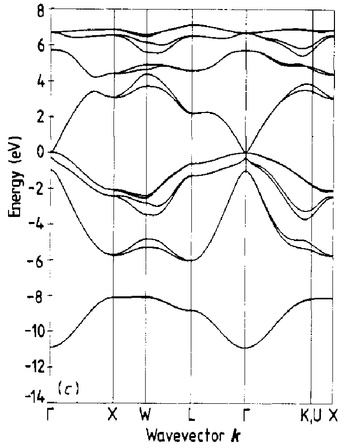
Bandstruktur und Theorie
53
7.6
Bandstruktur und Theorie
Die Bandstrukturrechnungen zu CdTe und HgTe weisen große Ähnlichkeiten auf [61]. Zwar
unterscheiden sich diese beiden Halbleiter im Betrag ihrer fundamentalen Lücke. Mit der Pho-
toelektronspektroskopie sind jedoch nur besetzte Zustände einer Probe sichtbar. Diese liegen
unterhalb der Fermi-Energie und bilden das Valenzband. In den Abbildungen 7.18 und 7.19
sind es die Zustände negativer Energie. In diesem Bereich gibt es auch die meisten Gemein-
samkeiten im wellenvektorabhängigen Verhalten der Zustände.
Abbildung 7.18: Bandstruktur von CdTe [61]
Abbildung 7.19: Bandstruktur von HgTe [61]
Die drei Materialien CdTe, HgTe und HgCdTe sind sich in ihrem Tellur-Anteil von 50 %
gleich. Das Valenzband wird an der Fermi-Energie von p-artigen Elektronen gebildet [57]. Die-
se Zustände liefert das Tellur, daher ist die Ähnlichkeit nicht verwunderlich. Erst ab einem
Kompositionsverhältnis unter 0,07 für Hg1-xCdxTe erreicht das s-artige Leitungsbandniveau
des Kations die Fermi-Energie und invertiert sein Verhalten. Es klappt unter die Fermi-Energie.
Mit der Photoelektronspektroskopie war es möglich, diese invertierte Bandstruktur direkt zu
beobachten [59].
Insofern sollte man bei Untersuchungen von HgCdTe mittels Photoemission keine großen
Veränderungen innerhalb des Valenzbandes erwarten, sondern das Auftauchen eines zusätzli-
chen Bandes zwischen den Γ8- und Γ7-Bändern (siehe Skizze 7.20). Eine Besonderheit der so-
genannten „small-gap“-Halbleiter ist das veränderte Dispersionsverhalten direkt am Γ-Punkt.
Das Kane-Modell [62] beschreibt dieses nicht-parabolische Verhalten bei Halbleitern, deren
Bandlücke kleiner als 0,35 eV ist.
Neben den schon beschriebenen Problemen, überhaupt ein Valenzbandmaximum zu be-
stimmen, war auch das rechnerische Anpassen der gemessenen Spektren an eine Verteilung

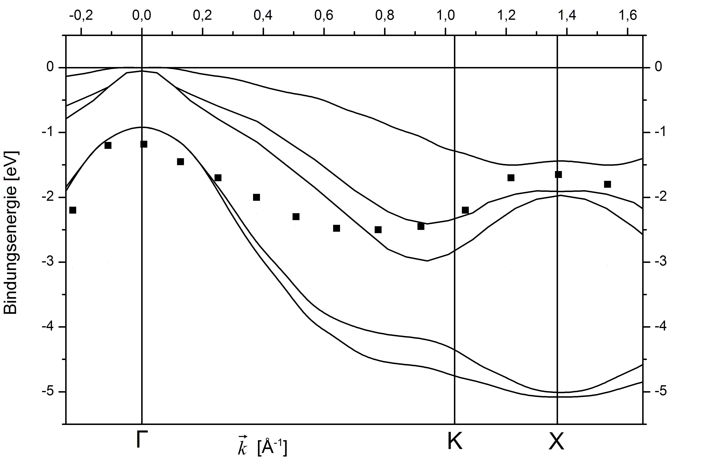
54
Ergebnisse der Photoemission
Abbildung 7.20: Schematische Darstellung der Bandstruktur von
CdTe und HgTe am Γ-Punkt.
von Zuständen keineswegs trivial. Da die Spektren nicht aus einzelnen, separaten Peaks be-
standen, konnten die automatischen Funktionen („Fit Multi-peaks“) von Origin [25] nicht ver-
wendet werden. Jeder Versuch, mit dieser Automatik dennoch die Messergebnisse anzupassen,
führte zu wertlosen und nicht reproduzierbaren Ergebnissen.
Daher musste die anzupassende Funktion selbst geschrieben („Non-linear Curve Fit - Ad-
vanced Fitting Tool“) und manuell mit Werten versehen werden. Die automatische Anpassung
der Fitparameter mit dem Levenberg-Marquardt-Algorithmus führte wieder zu unbrauchba-
ren Ergebnissen. Die Anpassung musste zum großen Teil „von Hand“ erfolgen. Erst in der
Feinabstimmung konnten Automatiken eingesetzt werden. Allerdings war es nicht möglich,
mit den drei erwarteten Bändern eine befriedigende Anpassung der gemessenen Spektren zu
erreichen.
Abbildung 7.21: Dispersion des Punktes maximaler Intensität aus der K⊥-Messung
an Probe I, eingetragen in eine Bandstrukturrechnung.
Bandstruktur und Theorie
55
Zum Vergleich mit der Bandstrukturrechnung wurden daher nur die Ergebnisse der k⊥-
Messungen von Probe I herangezogen. Man beobachtet in Abbildung 7.14 für Photonenener-
gien von 120 bis 85 eV eine Dispersion zu höheren Bindungsenergien. Im Bereich von 80 bis
65 eV sieht man hingegen eine Dispersion zu niedrigeren Bindungsenergien. Dieses Verhalten
kann mithilfe unterschiedlicher reziproker Gittervektoren in Formel (3.8) erklärt werden. Im
ersten Fall wird ~
G1 = 2π (4, 4, 0) angewendet und im zweiten Fall ~
G
(3, 3, 1). Damit ist
a
2 = 2π
a
die Energie von 115 eV dem Γ-Punkt zugeordnet und die Energie von 65 eV dem X-Punkt.
In den Einzelspektren der Messung in normaler Emission findet sich jeweils ein Punkt ma-
ximaler Intensität, der sehr genau bestimmt werden kann. Dieser Punkt weist außerdem eine
starke Dispersion auf. Er repräsentiert daher mit großer Wahrscheinlichkeit ein Volumenband.
Unabhängig vom der weiteren Intensitätsverteilung im gemessenen Spektrum wurde die Ener-
gie dieses Punktes bestimmt. Mit den gefundenen passenden reziproken Gittervektoren wurde
jeder dieser Punkte einem Punkt im reziproken Raum zugeordnet. In Abbildung 7.21 sind die-
se Punkte mit einer Bandstrukturrechnung überlagert. Das Intensitätsmaxima kann demnach
nicht nur einem einzigen Band zugeordnet werden.
Kapitel 8
Zusammenfassung
Im Rahmen dieser Diplomarbeit bestand die Aufgabe, die elektronische Struktur einiger Pro-
ben (Abbildung 5.4) von Hg1-xCdxTe zu bestimmen. Die Zusammensetzung der Kristalle vari-
iert zwischen x=0,07 und x=0,4.
In einem ersten Schritt mussten die Proben charakterisiert werden. Die Orientierung konnte
mit der Röntgenbeugung nach Laue (Epigramm) sehr genau bestimmt werden. Eine Transmis-
sionsmessung mit dieser Methode legte deutlich den polykristallinen Charakter der Proben
dar. Jedoch ist die makroskopische Orientierung der Kristalle einheitlich. Die Untersuchungen
mit energiedispersiver Röntgenspektroskopie ergab einen noch ungeklärten Mangel an Tellur.
Doch die Daten der Zusammensetzung konnten bestätigt werden.
Die nächste Herausforderung ist die Präparation einer Oberfläche, die für Photoemission-
messungen geeignet ist. Das Verfahren des Sputterns und Annealens kann nicht verwendet
werden. Entlang der (110)-Richtung lassen sich die Kristalle hingegen sehr gut spalten. Die-
se Spaltrichtung ist allgemein von Kristallen in Zinkblendestruktur bevorzugt. Noch bessere
Ergebnisse konnten erzielt werden, wenn die Proben vor dem Spalten gekühlt wurden. Die
Qualität einer durchgeführten Spaltung wurde mit der Beugung langsamer Elektronen sowie
mit einem Rasterelektronenmikroskop überprüft und bestätigt. Weiterhin zeigte die Untersu-
chung der Probenoberflächen mit einem Atomkraftmikroskop, dass sich Fehlstellen in HgCdTe
schon bei Raumtemperatur aus dem Volumen an die Oberfläche bewegen können.
Auch die eigentliche Photoemissionsmessung war erfolgreich. Bei der Untersuchung der
energetischen Lage der Kernniveaus wurden Einflüsse der chemischen Umgebung sichtbar. So
konnte zum Beispiel eine Verdopplung der Spin-Bahn-aufgespaltenen Te4d-Niveaus gemessen
werden (Abbildung 7.7). Des weiteren ließ sich eine Verschiebung der Kernniveaus nahe dem
Valenzband in Abhängigkeit von der Zusammensetzung messen.
Die Messungen an gut präparierten (110)-Oberflächen in normaler Emission zeigten eine
gut sichtbare Dispersion, die sich eindeutig symmetrischen Punkten der Brillouin-Zone zuord-
nen lassen. In einigen Punkten stimmte der Verlauf dieser Dispersion mit den theoretischen
Rechnungen überein. Die Kernniveaus zeigten erwartungsgemäß keinerlei Dispersion. Ihre
energetische Lage ist winkelunabhängig.
56
Anhang A
A.1
Messdaten EDX April 2007
Die ersten Messungen der Komposition mittels EDX erfolgten im April 2007 an fünf ausge-
wählten Proben. Die Messergebnisse wurden auf zwei Atome in der Einheitszelle normiert.
Damit lässt sich der Anteil Cd direkt dem x-Wert der Summenformel Hg1-xCdxTe zuordnen.
Der angegebene Sollwert stammt von den Unterlagen aus Moskau, die den Proben mitgegeben
wurden. Dort wurden die Proben bereits vor 2004 charakterisiert und mithilfe einer anderen
Methode ihre Zusammensetzung sehr genau bestimmt.
Nr.
Cd
rel.Fehler
Hg
rel. Fehler
Te
rel.Fehler
Probe
x (soll)
1
0.07
29.6%
1.00
18.9%
0.93
8.2%
I
0.07
0.06
40.6%
1.02
19.6%
0.92
8.5%
0.05
45.5%
1.05
19.1%
0.90
8.8%
2
0.13
17.9%
0.99
19.3%
0.89
8.8%
V
0.1955
0.11
20.5%
0.99
19.3%
0.90
8.7%
0.15
16.1%
0.93
18.5%
0.92
7.8%
3
0.39
10.4%
0.67
21.9%
0.94
8.4%
II
0.4
0.40
9.9%
0.65
22.2%
0.95
7.8%
0.38
10.1%
0.69
21.2%
0.93
7.9%
4
0.20
15.2%
0.89
20.3%
0.91
8.6%
V
0.1955
0.18
16.3%
0.90
20.3%
0.92
8.6%
0.17
19.0%
0.90
21.7%
0.93
8.8%
5
0.16
19.7%
0.90
20.8%
0.93
8.8%
V
0.1955
0.16
19.0%
0.89
23.1%
0.95
8.8%
0.16
18.4%
0.91
22.8%
0.93
8.9%
Tabelle A.1: Zusammensetzung ausgewählter fünf Proben, Ergebnisse von EDX. Es wurden je drei un-
terschiedliche Punkte der Proben untersucht. An den Proben wurde zuvor mittels Photoemission ge-
messen.
Weitere Messungen in Photoemission wurden im Juli und August 2007 vorgenommen. Bei
der Präparation ist eine Probe bereits vor der Messung gespalten. Sie ist auf der folgenden Seite
mit Probe 10 bezeichnet. Unter der Tabelle finden sich zwei SEM-Aufnahmen dieser Probe.
57
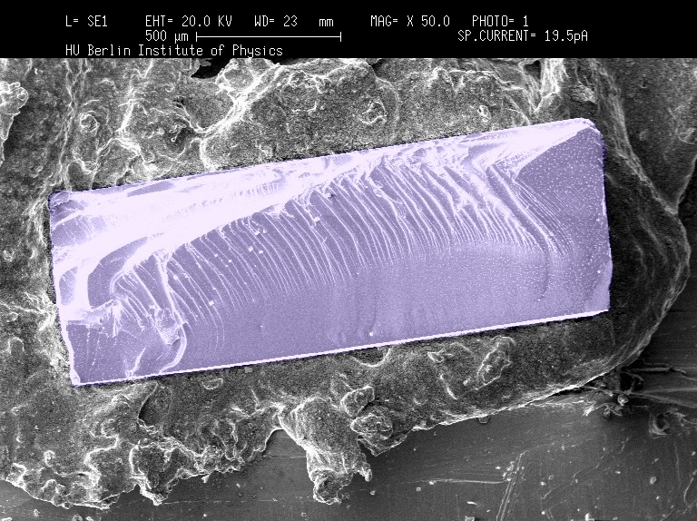

58
Anhang
A.2
Messdaten EDX August 2007
Nach Beendigung der Messungen bei BESSY im August 2007 wurden auch diese Proben zur
Untersuchung mittels EDX gegeben:
Nr.
Cd
rel.Fehler
Hg
rel. Fehler
Te
rel.Fehler
Probe
x (soll)
1
0.16
20.7%
0.95
21.9%
0.89
9.0%
VI
0.105
0.09
20.5%
1.00
17.4%
0.91
7.7%
0.11
21.2%
0.96
20.8%
0.92
9.0%
2
0.39
8.9%
0.64
19.1%
0.97
7.1%
II
0.4
0.38
9.6%
0.65
19.9%
0.96
7.5%
0.40
9.1%
0.66
20.0%
0.94
7.2%
3
0.07
40.9%
0.98
22.0%
0.95
9.0%
I
0.07
0.04
54.4%
1.08
20.3%
0.88
8.9%
0.05
46.0%
1.07
19.0%
0.88
8.7%
4
0.11
23.5%
1.00
20.2%
0.89
8.9%
VI
0.105
0.11
18.8%
0.97
18.5%
0.92
7.8%
0.10
25.5%
0.99
20.1%
0.91
9.0%
5
0.12
22.1%
0.96
21.0%
0.92
9.0%
VI
0.105
0.11
22.4%
0.94
21.3%
0.94
8.4%
0.08
32.5%
1.03
20.6%
0.89
9.0%
6
0.07
38.2%
1.05
19.4%
0.88
8.7%
I
0.07
0.07
39.5%
1.03
20.0%
0.90
8.8%
0.09
27.0%
1.00
22.1%
0.91
9.0%
7
0.17
17.9%
0.93
20.5%
0.90
8.8%
V
0.1955
0.16
19.2%
0.91
21.8%
0.93
8.9%
0.17
18.8%
0.90
22.5%
0.93
8.8%
8
0.17
17.3%
0.90
19.9%
0.93
8.4%
IV
0.183
0.15
16.7%
0.94
18.4%
0.91
8.1%
0.17
16.4%
0.91
17.6%
0.92
7.6%
9
0.06
31.4%
1.02
18.3%
0.92
7.6%
I
0.07
0.05
46.2%
1.05
19.9%
0.90
8.7%
0.06
26.3%
1.04
16.8%
0.90
7.2%
10
0.06
35.8%
1.05
19.8%
0.89
8.7%
I
0.07
0.06
37.4%
1.02
19.6%
0.92
8.5%
0.07
39.2%
1.00
20.9%
0.93
8.9%
Tabelle A.2: EDX-Ergebnisse an den Proben, die im Juli und August 2007 per ARPES untersucht wurden.
Literaturverzeichnis
[1] W. D. Lawson, S. Nielson, E. H. Putley, and A. S. Young. Preparation and properties of
HgTe and mixed crystals of HgTe-CdTe. J. Phys. Chem. Solids 9, 325-329 (1959).
[2] D. Long and J. L. Schmit. Mercury-cadmium telluride and closely related alloys. Semi-
conductors and Semimetals, Vol. 5, pp. 175-255, edited by R. K. Willardson and A. C. Beer,
Academic Press, New York (1970).
[3] Gert Finger, J. Garnett, N. Bezawada, R. Dorn, L. Mehrgan, M. Meyer, A. Moorwood, J.
Stegmeier, G. Woodhouse. Performance evaluation and calibration issues of large format
infrared hybrid active pixel sensors used for ground- and space-based astronomy. Nuclear
Instruments and Methods in Physics Research A 565 (2006) 241-250.
[4] Derek Ives, Nagajara Bezawada. Large area near infra-red detectors for astronomy. Nuclear
Instruments and Methods in Physics Research A 573 (2007) 107-110.
[5] S. Gillessen, et. al. The Messenger 120 (2005) 26-32.
[6] S. H. Groves, R. N. Brown. C. R. Pidgeon. Interband Magnetoreflection and Band Structure
of HgTe. Phys. Rev. 161 (1967), 779.
[7] N. Orlowski. Untersuchung der elektronischen Struktur von HgSe und HgTe mittels win-
kelaufgelöster Photoemission. Diplomarbeit, AG EES, (2000).
[8] W. M. Higgins, G. N. Pultz, R. G. Roy, R. A. Lancaster, J. L. Schmit. Standard relationships
in the properties of Hg1-xCdxTe. Vakuum Science and Technology A 7 (1989), p 271-275.
[9] E. Preuss, B. Krahn-Urban, R. Butz. Laue Atlas. Plotted Laue Back-Reflection Patterns of the
Elements, the Compounds RX and RX2. Bertelsmann Universitätsverlag, Düsseldorf, 1974.
[10] A. Tanaka, Y. Masa, S. Seto, T. Kawasaki. Zinc and selenium co-doped CdTe substrates
lattice matched to HgCdTe. J. Cryst. Growth vol. 94 (1989) p. 166-70.
[11] K.-U. Gawlik. Untersuchung der elektronischen Struktur von II-VI-Verbindungshalb-
leitern mit direkter und inverser Photoemission. Dissertation, (1996).
[12] W. K. Ford, T. Guo, D. L. Lessor, C. B. Duke. Dynamical low-energy electron-diffraction
analysis of bismuth and antimony epitaxy on GaAs(110). Phys. Rev. B 42, 14 (1990), 8952.
[13] C. B. Duke. Structure and bonding of tetrahedrally coordinated compound semiconductor
cleavage faces. J. Vac. Sci. Technol. A 10(4), 2032 (1992).
[14] H. Hertz. Über den Einfluss des ultravioletten Lichtes auf die elektrische Entladung. Ann.
Phys. 31, 983 (1887).
59
60
LITERATURVERZEICHNIS
[15] W. Hallwachs. Über den Einfluss des Lichtes auf elektrostatisch geladene Körper. Ann.
Phys. 33, 303 (1888).
[16] A. Einstein. Über einen die Erzeugung und Verwandlung des Lichtes betreffenden heuris-
tischen Gesichtspunkt. Annalen der Physik 17 (1905), 132-148.
[17] W. E. Spicer. Photoemissive, Photoconductive, and Optical Absorption Studies of Alkali-
Antimony Compounds Phys. Rev. 112, 117 (1958).
[18] Stefan Hüfner. Photoelectron Spectroscopy, Principles and Applications, Third Edition.
Springer-Verlag Berlin Heidelberg New York 2003.
[19] R. Heimburger. Elektronische Eigenschaften und Phasentransformation von β-MoTe2. Di-
plomarbeit, AG EES, (2007).
[20] M. P. Seah, W. A. Dench. Quantitative Electron Spectroscopy of Surface: A Standard Data
Base for Electron Inelastic Mean Free Paths in Solids. Surface and Interface Analysis, Vol. 1,
Issue 1, p 2-11 (1979).
[21] D. A. Shirley. High-Resolution X-Ray Photoemission Spectrum of the Valence Bands of
Gold. Phys. Rev. B 5, 4709-4714 (1972).
[22] S. Tougaard. Deconvolution of loss features from electron spectra. Surface Science 139
(1984) pp. 208-218.
[23] M. Kauert. Vanadiumoxide. Herstellung, Charakterisierung und elektronische Struktur.
Diplomarbeit, AG EES, (2007).
[24] A. Savitzky, Marcel J.E. Golay. Smoothing and Differentiation of Data by Simplified Least
Squares Procedures. Analytical Chemistry, 36: 1627-1639 (1964). doi:10.1021/ac60214a047
[25] Softwarepaket: Origin 7.5 SR5, http://www.OriginLab.com (2004)
[26] T. Plake. Aufbau und Inbetriebnahme des Photoemissionsexperimentes HIRE-PES: Cha-
rakterisierung und erste Untersuchungen an Bi2Sr2CuO6-Hochtemperatursupraleitern.
Diplomarbeit, AG EES, (1998).
[27] C. Janowitz, R. Müller, T. Plake, Th. Böger, R. Manzke. New high-resolution photoemis-
sion station for synchrotron radiation at BESSY. Journal of Electron Spectroscopy and Related
Phenomena 105, 43-49 (1999).
[28] E. Purcell. Phys. Rev. 54 (1938) 818.
[29] G. Mante. Doktorarbeit, Universität Kiel (1992).
[30] Instruction Manual VUV Discharge Lamp HIS 13. Omicron Vakuumphysik GmbH
(www.omicron.de).
[31] Platin-Widerstandsthermometer Pt100 nach IEC 751 / DIN EN 60751.
[32] AR65view. Java-Software zur Analyse und Manipulation der Messdaten von AR65 und
WESPHOA. sourceforge.net/projects/ar65view/.
[33] M. Martins, G. Kaindl, N. Schwentner. Design of the high-resolution BUS XUV-beamline
for BESSY II. Journal of Electron Spectroscopy and Related Phenomena 101-103, 965-969 (1999).
LITERATURVERZEICHNIS
61
[34] N. Orlowski, J. Augustin, Z. Golacki, C. Janowitz, R. Manzke. Direct evidence for the in-
verted band structure of HgTe. Phys. Rev. B, Rapid Communications, 61, R5058-R5061, (2000).
[35] J. C. Brice. Properties of Mercury Cadmium Telluride. EMIS Datareviews Series No 3. IN-
SPEC, IEE, p. 3 (1994).
[36] G. L. Hansen, J. L. Schmit, and T. N. Casselman. Energy gap versus alloy composition and
temperature in Hg1-XCdXTe. J. Appl. Phys. 53, 7099-7101 (1982).
[37] P. Norton. HgCdTe infrared detectors. Opto-Electronics Review 10(3), 159-174 (2002).
[38] A. W. Vere, B. W. Straughan, D. J. Williams, N. Shaw, A. Royle, J. S. Gough, J. B. Mullin.
Growth of CdXHg1-XTe by a pressurised cast-recrystallise-anneal technique J. Cryst. Grow-
th vol. 59 (1982) p. 121-129.
[39] L. Colombo, A. J. Syllaios, r. W. Perlaky, M. J. Brau. Growth of large diameter (Hg,Cd)Te
crystals by incremental quenching. J. Vac. Sci. Technol. A 3(1), 100-104 (1985).
[40] Yue Wang, Quanbao Li, Qinglin Han, Qinghua Ma, Bingwen Song, Wanqi Jie, Yaohe Zhou,
Yuko Inatomi. A two-stage technique for single crystal growth of HgCdTe using a pressu-
rized Bridgman method. Journal of Crystal Growth 263 (2004) 273-282.
[41] L. Colombo, R. R. Chang, C. J. Chang, B. A. Baird. Growth of Hg-based alloys by the
traveling heater method. J. Vac. Sci. Technol. A 6(4), 2795-2799 (1988).
[42] T. C. Harman. Optically pumped LPE-grown Hg1-XCdXTe lasers. J. Electron. Mater. vol. 8
(1979) p. 191-200.
[43] B. H. Koo, Y. Ishikawa, J.F. Wang, M. Isshiki. Crowth of Hg1-x(Cd1-yZny)xTe epilayers on
(100) Cd1-yZnyTe/GaAs substrates by ISOVPE. Materials Science and Engineering, B66, 70-
74, (1999).
[44] Yue Wang, Quanbao Li, Qinglin Han, Qinghua Ma, Rongbin Ji, Bingwen Song, Wanqi Jie,
Yaohe Zhou, Yuko Inatomi. Growth and properties of 40mm diameter Hg1-XCdXTe using
the two-stage Pressurized Bridgman method. Journal of Crystal Growth 263 (2004) 54-62.
[45] Vladimir Nikiforov (Nikiforov Vladimir Nikolaevix), MSU, Private communicati-
on.
[46] P. Capper. Properties of narrow gap Cadmium-based compounds. INSPEC, the Institution of
Electrical Engineers (1994).
[47] D. J. Williams, A. W. Vere. Sub-grain boundaries in CdXHg1-XTe and CdTe. J. Cryst. Growth
vol. 83 (1987) p. 341-352.
[48] W. E. Spicer, J. A. Silberman, and I. Lindau. Band gap variation and lattice, surface, and
interface “instabilities“ in Hg1-XCdXTe and related compounds. J. Vac. Sci. Technol. A 1(3)
pp. 1735-1743 (1983).
[49] P. Morgen, J. Silberman, I. Landau, W. E. Spicer, J. A. Wilson. Stability of an atomically
clean Hg1-XCdXTe surface in vacuum and under O2 exposure. Journal of Crystal Growth 56,
493-497 (1982).
[50] R. Mitdank. Mikrosondenanalyse. Beispiele für Untersuchungen an der Elektronenstrahl-
mikrosonde. http://htc.physik.hu-berlin.de/∼mitdank/semq.htm.
62
LITERATURVERZEICHNIS
[51] M. A. Berding, A. Sher, A-B Chen and R. Patrick. Vacancies and surface segregation in
HgCdTe and HgZnTe. Semicond. Sci. Technol. vol. 5 pp. S86-S89 (1990).
[52] C. Ribbat. Aufbau einer MBE-Anlage zur Herstellung von Molybdändichalkogenid-
Schichtkristallen für photovoltaische Anwendungen. Diplomarbeit, AG EES, (1998).
[53] J. A. Silberman, P. Morgen, I. Lindau, and W. E. Spicer. UPS study of the electronic struc-
ture of Hg1-XCdXTe: Breakdown of the virtual crystal approximation. J. Vac. Sci. Technol.,
21(1) pp. 142-145 (1982).
[54] C. K. Shih and W. E. Spicer. Photoemission studies of core level shifts in HgCdTe, CdMnTe,
and HgZnTe. J. Vac. Sci. Technol. A, 5(5) pp. 3031-3034 (1987).
[55] C. K. Shih, J. A. Silberman, A. K. Wahi, G. P. Carey, I. Lindau, and W. E. Spicer. Angle resol-
ved photoemission study of the alloy scattering effect in Hg1-XCdXTe. J. Vac. Sci. Technol.
A, 5(5) pp. 3026-3030 (1987).
[56] Dr. Ralph Püttner, FU Berlin. Beamlinebetreuer BUS. Private communication.
[57] Chang-Youn Moon, Su-Huai Wei. Band gap of Hg chalcogenides: Symmetry-reduction-
induced band-gap opening of materials with inverted band structures. Phys. Rev. B
74:045205 (2006).
[58] J. F. Moulder, W. F. Stickle, P. E. Sobol, K. D. Bomben. Handbook of X-ray Photoelectron Spec-
troscopy. Perkin-Elmer Corporation, 1992.
[59] C. Janowitz, N. Orlowski, R. Manzke, Z. Golacki. On the band structure of HgTe and HgSe
- view from photoemission. Journal of Alloys and Compounds, 328, 84-89, (2001).
[60] A. Fleszar, W. Hanke. Electronic structure of IIB-VI semiconductors in the GW approxima-
tion. Phys. Rev. B 71:045207 (2005).
[61] A-B Chen, Y-M Lai-Hsu, S. Krishnamurthy, M. A. Berding, and A. Sher. Band structures of
HgCdTe and HgZnTe alloys and superlattices. Semicond. Sci. Technol. vol. 5 pp. S100-S102
(1990). doi:10.1088/0268-1242/5/3S/021
[62] E. O. Kane. Band structure of indium antimonide. J. Phys. Chem. Solids 1 (4), 249-261 (1957)
[63] C. Janowitz, L. Kipp, R. Manzke. Experimental surface band structure of CdTe(110). Sur-
face Science 231 (1990) 25-31.
Danksagung
Die Mitarbeit in einem wissenschaftlichen Team stellt den krönenden Abschluss meines Studi-
ums dar. Daher möchte ich mich bei der Arbeitsgruppe EES für die freundliche Aufnahme und
gute Zusammenarbeit bedanken. Neben ARPES konnte ich so viele andere Geheimnisse näher
kennen lernen, die sich hinter Abkürzungen wie STM, XUV, LEED, EDX, SEM, AFM, EPR und
BESSY verbergen. Mein Dank gilt insbesondere:
• Prof. Manzke für die Bereitstellung des interessanten Themas und die Möglichkeit, in
seiner Arbeitsgruppe ein so umfassendes Forschungsthema eigenständig bearbeiten zu
können.
• Dr. Krapf für die Unterstützung, den dreimonatigen Forschungsaufenthalt in Moskau zu
organisieren.
• Hr. Sölle für die Präparation und Zerteilung der Proben.
• Der Werkstatt (insbesondere Hr. Rausche, Hr. Fahnauer und Frau Rosinska) für die gute
Zusammenarbeit, die Hilfe beim Herstellen zahlloser Kleinteile und die Unterstützung
bei der Reparatur einiger Gerätschaften.
• Telegina Inna Vasiljevna für die umfassende Laue-Untersuchung meiner Kristalle.
• Nikiforov Vladimir Nikolaeviq für die Betreuung während des Moskauer For-
schungsaufenthaltes.
• den Korrekturlesern Gabi, Rahela, Susan und Horst für die große Mühe, all die kleinen
Fehler zu entdecken, die sich eingeschlichen hatten. Danke auch für die guten Vorschläge
zu besseren Formulierungen.
• auch meiner Familie, die mit Geduld mein Studium begleitet hat und ohne deren Unter-
stützung das alles hier nicht möglich gewesen wäre.
Erklärung
Hiermit versichere ich, die vorliegende Arbeit ohne unerlaubte fremde Hilfe angefertigt zu
haben. Es sind keine anderen als die angegebenen Quellen und Hilfsmittel benutzt worden.
Ich gestatte Einsichtnahme in diese Diplomarbeit in der Fachbereichsbibliothek.
Berlin, Januar 2008
Matthias Kreier
Document Outline